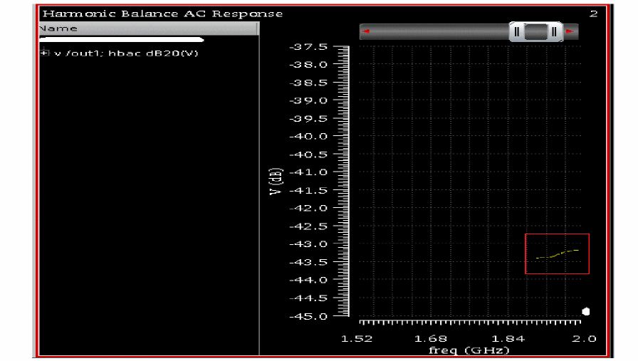
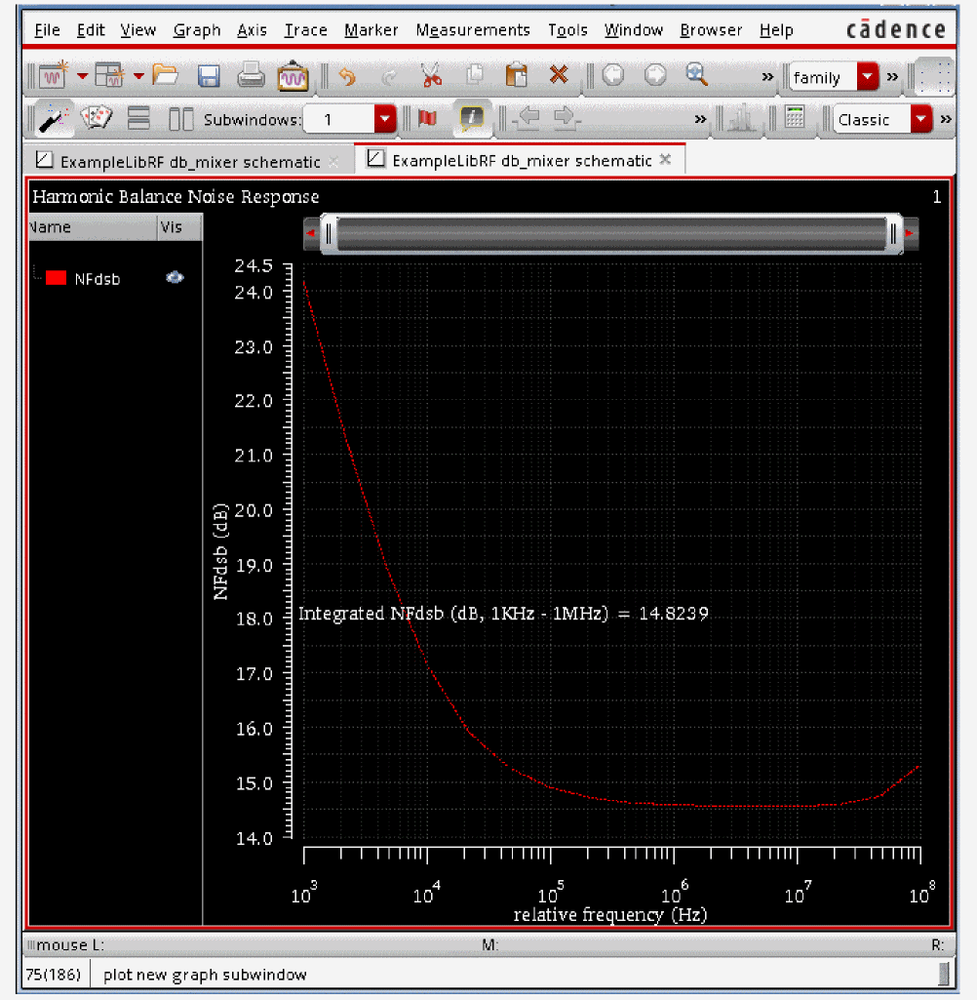
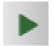
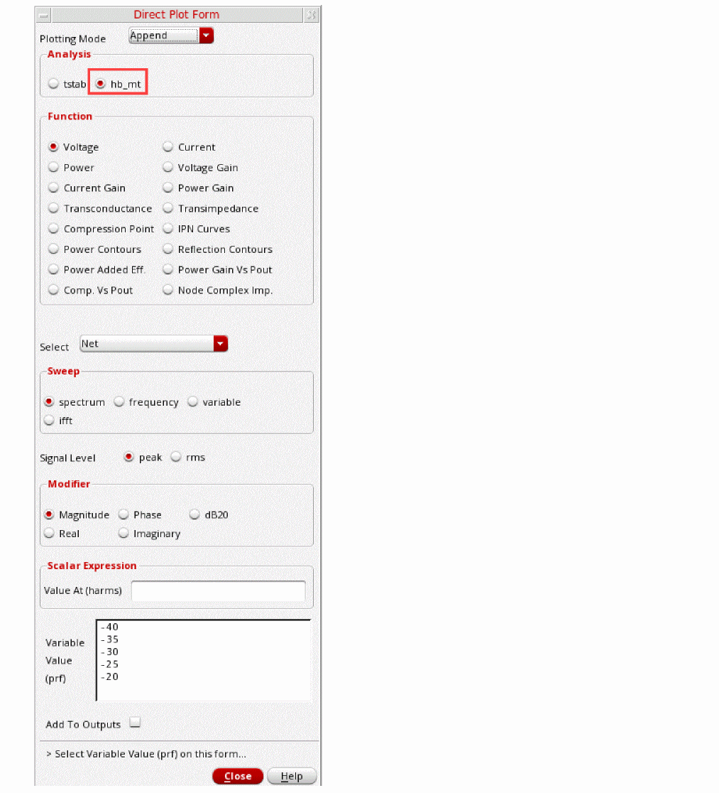
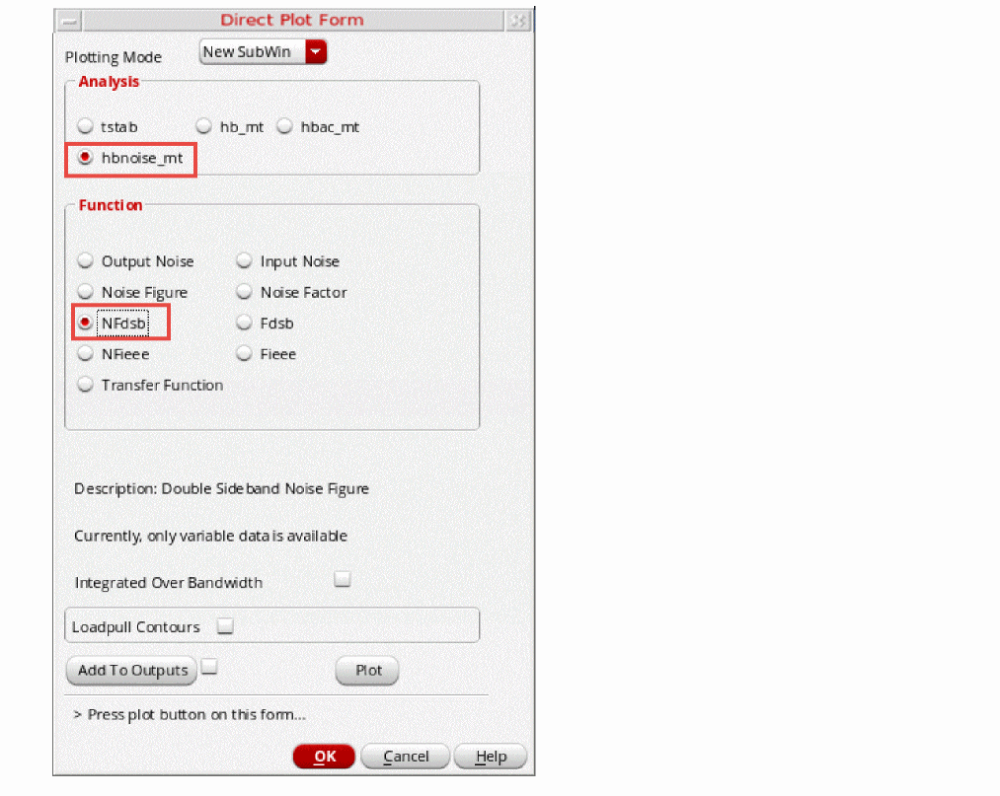
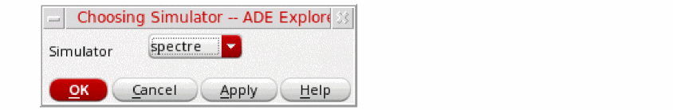
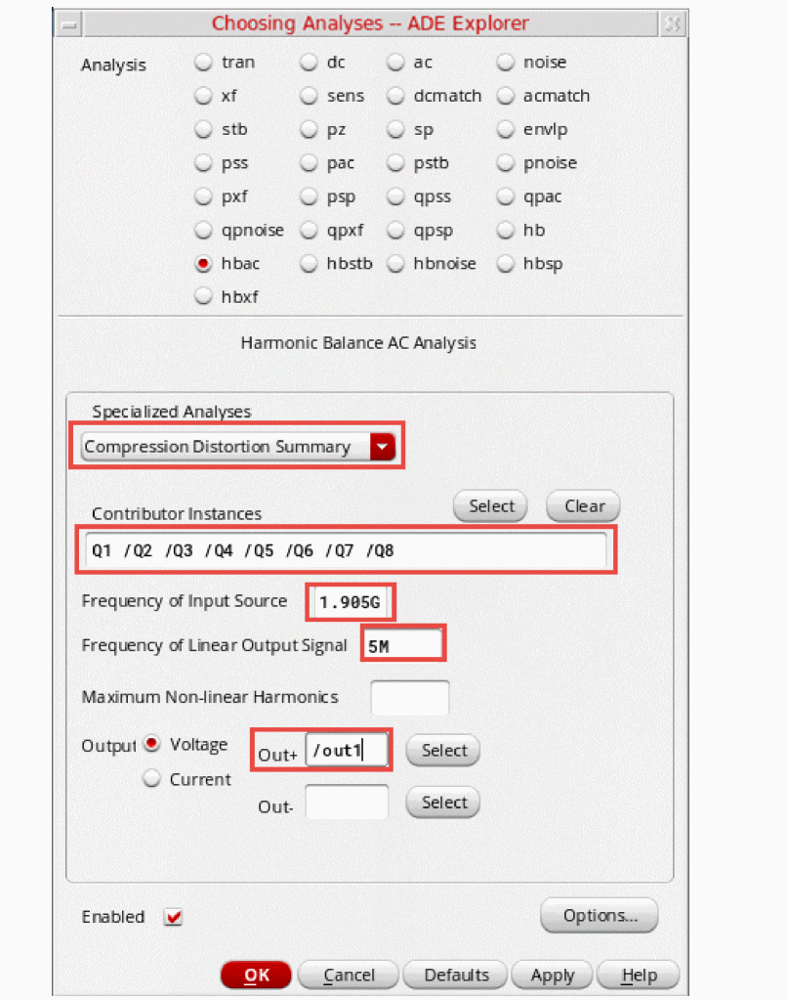
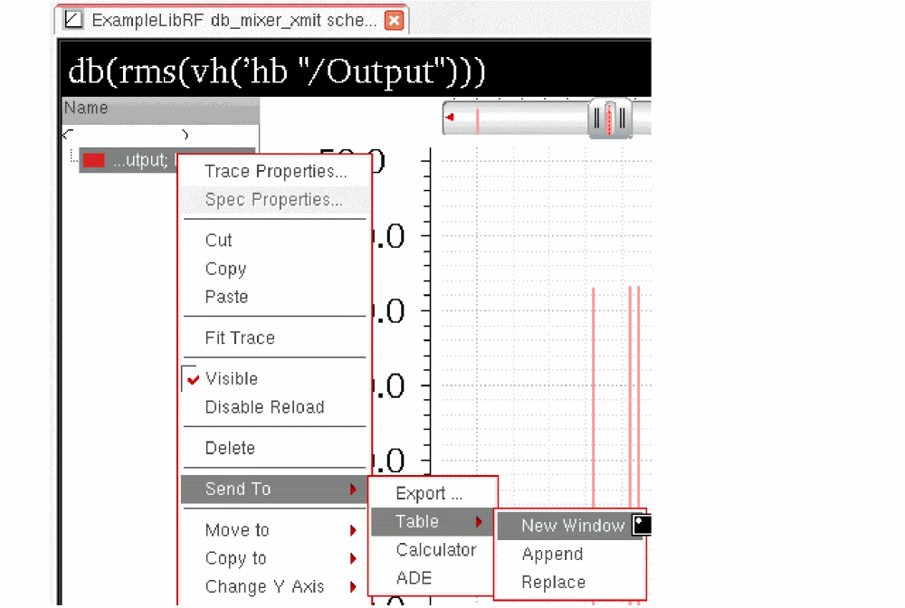
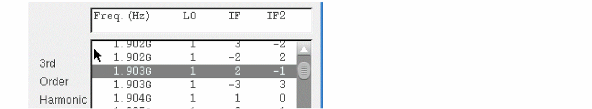

4
Simulating Mixers
The SpectreRF simulator can simulate circuits, such as mixers, that show frequency conversion effects.
This section uses two double balanced mixer circuits, db_mixer and db_mixer_xmit, to illustrate how the SpectreRF simulator can determine the characteristics of a mixer design.
In the mixer examples that follow, you will plot the following nonlinear characteristics of the db_mixer and db_mixer_xmit mixer circuits.
To use the examples in this section, you must be familiar with the SpectreRF simulator analyses as well as know about mixer design. For more information about the SpectreRF simulator analyses, see SpectreRF Simulation Option Theory.
The db_mixer and db_mixer_xmit Mixer Circuits
The db_mixer and db_mixer_xmit circuits can be found in the ExampleLibRF library. See the Introduction chapter for the instructions on accessing the ExampleLibRF library.
The db_mixer integrated circuit is a Gilbert cell (down-converting double balanced) mixer.
The schematic for the db_mixer circuit is shown below.
Figure 4-1 Schematic for the db_mixer Mixer Circuit
On the left side of the schematic there is a port labeled Input which generates the input signal. To the right of that is a matching network and a behavioral balun from rfLib. This feeds the input to a double-balanced mixer. There are two LO sources in the circuit (in the middle of the schematic) between the bottom devices. The LO operates at 1.9GHz. Next to the label Output, is the output port of the mixer.
The db_mixer_xmit circuit is a similar circuit, but an up-converting double-balanced mixer with image rejection.
The following tables lists some measured values for different aspects of the db_mixer down-converting mixer.
| Measurement | Measured |
|---|---|
| Design Variable | Default Value |
|---|---|
Setting Up to Simulate the db_mixer Mixer
In a Unix window, type virtuoso & to start the Cadence software. (For more information, see the Introduction chapter.)
Opening the db_mixer Mixer Circuit in the Schematic Window
-
In the CIW (Command Interpreter Window), select File – Open.
The Open File form is displayed. - In the Open File form, choose ExampleLibRF from the Library drop-down list.
-
Type
db_mixerin the Cell field or select the cell from the Cells list box.
The completed Open File form appears like the one below.
Figure 4-2 Open File Form -
Click OK.
The Schematic window for db_mixer mixer is displayed.
Figure 4-3 db_mixer Schematic - In the Schematic window, choose Launch – ADE Explorer.
-
In the Launch ADE Explorer dialog, select Create New View.
The Create new ADE Explorer view form is displayed.
Figure 4-4 Create new ADE Explorer view -
Leave each option to the default selections and click OK.
The ADE Explorer window is displayed.
Figure 4-5 ADE Explorer Window
Choosing Simulator Options
-
In ADE Explorer, select Setup – Simulator.
The Choosing Simulator form is displayed. -
Select spectre from the Simulator drop-down list.
Figure 4-6 Choosing Simulator/Directory/Host Form - Completed - Click OK to close the Choosing Simulator form.
-
Set up the High Performance Simulation Options, as follows:
In the ADE window, choose Setup - High Performance Simulation. The High Performance Simulation Options window is displayed, as shown below.
Figure 4-7 High Performance Simulation OptionsSelect APS as the simulation performance mode. Note that Auto is selected for Multithreading options. The effect of this is to detect the number of cores on the system (up to 64) and then multi-thread on all the available cores.The bigger the circuit, the more threads you should use. For a small circuit such as this, you may want to set the number of threads to 2. Using 16 threads on a small circuit might actually slow things down because of the overhead associated with multithreading. For more information, see the Virtuoso Spectre User Guide. -
Select Outputs – Save All.
The Save Options form is displayed, as shown below.
Figure 4-8 Save Options Form -
In the Select signals to output section, make sure that allpub is selected.
This is the default selection. This saves all of the node voltages at all levels of the hierarchy, but it does not include the node voltages inside the device models.
To save the currents, use the Select device currents (currents) option, and select nonlinear if you just want to save the device currents, or all if you want to save all the currents in the circuit. - Click OK.
Setting Up Model Libraries
-
In ADE Explorer, select Setup - Simulation Files. The Simulation Files Setup form is displayed, as shown below.
Figure 4-9 Simulation Files Setup Form - Verify that the Include Path is set as shown above.
-
Select Setup – Model Libraries.
The Model Library Setup form is displayed. -
In the Model Library File field, type the following for the name of the model file:
models/modelsRF.scs -
Click Add.
The Model Library Setup form looks like the following:
Figure 4-10 Model Library Setup - Click OK.
Mixer Conversion Gain, RF to IF Isolation, LO to IF Leakage, and Noise Figure
You can measure the conversion gain using hb (Harmonic Balance) by applying the signal which causes the frequency conversion (the LO) in a hb analysis and follow this with hbac (Harmonic Balance AC) to measure the small-signal conversion gain. This will also be used to measure RF to IF isolation. Because hbac is based on the hb result with all the harmonics that hb solved for, the mixing products produced by mixing the input frequency with any or all of those harmonics can be calculated with hbac. In addition, hbnoise (Harmonic Balance noise) will be used to calculate the output noise and noise figure with all the frequency translations inherent in the mixer.
Hb solves for the steady-state solution produced by the LO and captures the nonlinearity of the mixer. Hb calculates the nonlinearity in the frequency domain as a series of harmonics.
The hbac analysis calculates the conversion gain based on the nonlinearity created by the LO. Hbac is also used to calculate the RF to IF isolation. This measurement is not a simple AC frequency response. It is the frequency response from RF to IF with the LO applied to the mixer.
Hbnoise also uses the nonlinearity from the hb large-signal analysis in order to calculate how noise is folded to the desired output frequency. Both of these analyses are quite fast and accurate.
Hbac and hbnoise are both small-signal analyses. Both are nonlinear in the sense of being able to take into account the frequency conversions created by the LO. Noise is almost certainly a small-signal problem. In practice, hbac calculates the correct conversion gain for the cases where the RF input causes little compression (that is, the input is 10dB or more below the 1dB compression point.)
Setting Up the Simulation - Setting Design Variables
To set the design variables to the values required for each simulation, perform the following steps:
-
In the Design Variables section of ADE Explorer, change the design variables frf1
.flo should already be set to 1.9G. To edit the values, simply click on the value to the right of the variable name, and type in a value. Then, press Enter. Setting the input frequencies to 0 disables the production of waveforms for the large-signal analyses like tran, pss, and hb (harmonic balance).
Figure 4-11 Design Variables Section of ADE Explorer Window
Setting Up the Harmonic Balance Analysis
-
In ADE Explorer, select Analyses – Choose.
The Choosing Analyses form is displayed. -
In the Choosing Analyses form, select hb. The form expands, as shown below.
Figure 4-12 The hb Choosing Analyses Form -
In the Transient-Aided Options section, leave the settings at their default value:
-
Leave Run Transient? to the default value of Decide Automatically.
Run transient will run the LO signal using the transient (In SpectreRF, this is called the tstab interval) for a short period of time. At the end of tstab, an FFT is performed, and this is used as the starting point in the harmonic balance analysis. Doing this improves the convergence of hb by giving it a better starting point at the cost of a short transient analysis.Stop Time (tstab) auto.
When auto is selected for Stop Time (tstab), a small number of periods of the LO is run using the transient analysis. During this time, the signal is checked for steady-state conditions. If steady-state is not reached in the initial number of periods, more periods can be added automatically by the simulator. Using this feature allows an accurate FFT for the starting point in the hb iterations. - When Run transient is set to Decide automatically, The Detect Steady State option is selected automatically. When this is set, when steady-state is detected in the tstab interval, the simulator stops the transient analysis, runs the FFT, and starts iterating in the frequency domain. Using Decide automatically simplifies the setup for harmonic balance, and produces correct answers from hb without needing to know how to set hb up manually.
- Leave Save Initial Transient Results (saveinit) blank.
-
Leave Run Transient? to the default value of Decide Automatically.
-
In the Tones section, ensure that Frequencies is selected. This is the default.
Harmonic balance can now set the harmonics automatically for the signal that causes the most distortion. This is recommended in the general case. A transient analysis runs until steady-state is detected, and then from the transient analysis, the number of harmonics for Tone1 (when Frequencies is selected) or for the tone that has tstab enabled (when Names is selected). If you want to manually set transient-aided hb, select Yes from the Run Transient? drop-down list and set a time for the transient in the Stop Time (tstab) field. In this mode, the stop time of the transient analysis in the tstab interval cannot be automatically extended.
If you want to see the startup waveform, select yes for Save Initial Transient Results (saveinit). - In the Number of Tones section, note that the number of tones is set to 1. (This is the default in hb). Since the RF tones were disabled, only the LO tone remains.
-
Enter
1.9Gas the Fundamental Frequency. - Leave Number of Harmonics set to auto. This is the default. Spectre will choose the appropriate number of harmonics for you. auto is allowed if Decide automatically or Yes are selected from the Run transient? drop-down list.
-
When you choose auto for the number of harmonics, leave Oversample Factor set to the default value of
1. When all the signals in the system (including currents) are nearly sinusoidal, then, Oversample Factor should also be set to 1. Set Accuracy Defaults (errpreset) to moderate. Exceptional accuracy is not needed because only the high amplitude LO signal needs to be solved for, so moderate (the default) is selected. -
Leave the rest of the form set to the default values. The hb Choosing Analyses form should look like the following figure:
Figure 4-13 hb Choosing Analyses FormFor more information on setting up the Choosing Analyses form, see Chapter 3: Frequency Domain Analyses: Harmonic Balance in the Spectre® Circuit Simulator and Accelerated Parallel Simulator RF Analysis User Guide. - Click Apply.
Set up the HBAC Choosing Analysis form.
-
In the Choosing Analyses form, select hbac. The form changes, as shown below.
Figure 4-14 hbac Choosing Analysis Form - Leave the Sweeptype set to default (absolute).
-
Set the Input Frequency Sweep Range.
Absolute takes the frequency range as specified with no frequency translation. Relative is also available where the input frequency can be shifted up or down in multiples of the PSS frequency. This is useful for having log sweeps above or below a PSS harmonic.
The frequency sweep range is always the input frequency range in hbac. Because hbac has the ability to calculate the outputs at different frequencies based on the nonlinearity caused by the LO, we choose which output frequencies to calculate in the Sidebands area of the Choosing Analyses form. Sideband is the name of the different output signals that are produced when mixing the input with harmonics of the LO signal. -
The amplitude for the hbac analysis is set in the input source (port rf with PAC magnitude =
1in this case) in the schematic. 1 is convenient because it is 0 dBV. This allows direct conversion gain measurement by using the dB20 function when the output signal is plotted.
Below are the steps showing how to set the PAC Magnitude in the schematic-
To set the amplitude for hbac, select the Input port in the schematic.
Figure 4-15 Input Port on Schematic -
After you click on the port, refer to the Property Editor on the left side of the schematic. You can scroll through the Property Editor by moving the scroll bar on the right side of the Property Editor.
Figure 4-16 Property Editor -
Select the Display Small Signal Params option near the bottom of the Property Editor, and set its value to true. This expands the Property Editor form.
The value for PAC Magnitude should be set to1 V. If it is not, set it to1 V. -
From the Schematic, select Check - Current Cellview. You do not have to save the design to simulate it. This allows “what if” analysis. If you like the results, you can then save the design. If you do not like the results, you do not have to save it.
In the hbac Choosing Analyses form, you will be selecting the direct conversion IF sideband and the output with no frequency translation from the Sidebands section under Select from Range.
-
To set the amplitude for hbac, select the Input port in the schematic.
-
In the Sidebands section, select Select from range.
Sidebands define the output frequencies to be calculated. In this setup, the direct conversion IF (1.9001G~2G-1*1.9G=100K~100M) is selected. In addition, hbac also calculates the outputs with no frequency translation (1.9001G~2G-0*1.9G=1.9001G~2G). You will be choosing these two sidebands.
The levels that are produced at each node at all the selected frequencies are also calculated by the hbac analysis.-
Highlight the
-
To select another sidebands, press and hold the Ctrl key, and select the
The hbac Choosing Analyses form looks like the figure below:
Figure 4-17 hbac Choosing Analyses Form -Set up the hbnoise Choosing Analyses form -
Highlight the
- Click Apply.
Set up the hbnoise Choosing Analyses form, as follows:
-
In the Choosing Analyses form, select hbnoise. The form changes, as shown below.
Figure 4-18 hbnoise Choosing Analyses Form - Leave the Sweeptype set to default.
-
In the Relative Harmonic field, type
1. -
Set the Output Frequency Sweep Range.
The Frequency Sweep Range fields are always the output frequency range in hbnoise. Maximum sideband specifies the highest harmonic of the LO we want to calculate the down converted noise from. In this case, noise through the 10th harmonic of the LO will be calculated. -
Type
1Kin the Start field. -
Type
100Min the Stop field. - Select Logarithmic sweep.
-
Type
3in the Points Per Decade field. -
Leave the Maximum sideband field blank.
- Select the Noise Figure option.
-
In the Output section of the form, by default, the Output is set to probe. Click Select to the right of the Output Probe Instance field and select the source to the right of the label Output in the schematic window.
When a port or a resistor is selected in this way, the noise of this component is excluded for the noise figure calculation. A port is a voltage source in series with a resistor as a single component and it is located in analogLib. -
In the Output section, by default, Input Source is set to type port. If you want a noise figure calculation, you must select a port as the input. Click Select to the right of the Input Port Source field and select the source to the right of the label Input in the schematic window.
In hbnoise, only output-referred and input-referred noise measurements are made, so both the input and output frequencies are declared in the Choosing Analyses form. In linear noise, the input-referred noise is the output-referred noise divided by the transfer function from input to output.
In hbnoise, because we have the ability to calculate frequency conversion, the design input frequency range is chosen in the reference sideband section in order to get the correct input-referred noise and noise figure at the design input frequency. This can also be referred to as the passband frequency.
In the select from range field, you will specify the input frequency range that goes with the output frequency range specified at the top of the form. - In the Reference side-band label section, choose Select from list from the drop-down list.
-
Select the u 1.9G 2G 1
Here is an example of how the reference sideband field is calculated:
suppose the reference sideband=k,
|fin|=|fout|+k*fundamental frequency.
Here,fout=1K~100Mand the fundamental frequency is 1.9G.
finshould be(1K~100M)+1.9G,
thus the reference sidebandkis1. - Select the Do Noise check box (this is the default).
- Select timeaverage from the Noise Type drop down list.
-
Select the All (AM,PM,USB,LSB).
When Noise Type is set to timeaverage, USB, LSB, AM and PM noise are directly available.You can choose, for example, PM noise alone, or you can select the ALL(AM,PM,USB,LSB) option, if you need all four types of noise. -
Select the Noise Separation check box.In addition to the total output noise, the individual noise contributions can be plotted when noise separation is selected. For more information on Noise Separation, see Chapter 3: Frequency Domain Analyses: Harmonic Balance in the Spectre® Circuit Simulator and Accelerated Parallel Simulator RF Analysis User Guide.
Figure 4-19 hbnoise Noise Separation Check Box.Your completed hbnoise Choosing Analyses form should look like the following figure.
Figure 4-20 hbnoise Choosing Analyses Form -
Click OK at the bottom of the form.
Figure 4-21 ADE Explorer Simulation Window
Running the Simulation and Plotting the Results
Start the analyses by clicking the green arrow icon. in ADE Explorer or in the Schematic Editor.
This netlists the design and runs the simulation. A SpectreRF status window appears (spectre.out logfile). When the analysis has completed, you may iconify the status window.
Next, you will plot the following:
Measuring Mixer LO to IF Leakage
-
In ADE Explorer, select Results - Direct Plot -Main Form.
The Direct Plot Form is displayed.
Figure 4-22 hb Direct Plot FormNote that there is an entry for hb noise separation. This is because you have selected Noise Separation option on the hb Choosing Analyses form.
First, plot the output spectrum
- In the Analysis section, select hb.
- In the Function section, select Voltage.
-
Select
Netin the center of the form. (This is the default. You can also select differential nets). - In the Sweep section, select spectrum (this is the default).
- In the Signal Level section, select rms (the default is peak).
-
In the Modifier section, select dB20.
The Direct Plot Form should look like the following:
Figure 4-23 Completed Direct Plot Form - Measuring Mixer LO Leakage -
Select the out1
The waveform window is displayed.
Figure 4-24 Harmonic Balance Response of /out1 netMeasure LO leakage on the IF Output
-
Move the mouse cursor to the tip of the spike at
m.
A marker appears on the plot. Click and hold on the marker readout and move it to a place where you can see all the harmonics, then release the mouse button. The LO amplitude is about -59.72 dB.
Figure 4-25 Measuring LO leakage on the IF Output
Plot the conversion gain and RF to IF isolation
- Change Plotting Mode to New SubWin.
- In the Analysis section, select hbac.
- In the Function section, select Voltage (this is the default).
- In the Sweep section, select spectrum (this is the default).
-
In the Modifier section, select dB20.
The Direct Plot Form looks like this.
Figure 4-26 Direct Plot Form - Plotting Conversion Gain and RF to IF isolation -
Click Replot. The waveform window updates, as shown below.
Figure 4-27 Conversion Gain and RF to IF LeakageLook at the bottom subwindow for the HBAC results. The mixer circuit is deliberately very slightly unbalanced. In the HBAC Choosing Analyses form, you defined an input frequency range to be swept. HBAC calculates the amplitudes of the output signals at the frequencies you chose in the sidebands section of the Choosing Analyses form. -
Note that the trace near 2GHz is about -43.4dB, and measures the gain from input to output with no frequency conversion. This is due to RF to IF leakage.
If you want, place a marker at that location by moving the mouse cursor to the tip of the spike at 2GHz and typingm. Click and hold on the marker readout and move it to a place where you can see all the sidebands, then release the mouse button.
Next, move the cursor to 1.9001GHz and just below -40dB, read the value of the cursor marker. In this case, the RF to IF isolation is about 43.4 dB. If you want, place a marker at that location as well.
Measure Voltage Gain vs Output Frequency
-
Optional: Remove the markers from the Waveform window by choosing Marker - Delete All or by pressing the Ctrl+E bindKey.
You may need to zoom in close to the waveform. To do that, click and hold the right mouse button and drag a square outline around the waveform, as shown in the next figure.
Figure 4-28 : Choosing Sideband of Interest -
Delete the result near 2GHz. To do this, in the waveform window, click the trace near 2GHz and just below -40 dB. Press the Delete key. To see the remaining trace, you may need use the bindkey f to fit (resize) the window so that the entire plot is shown.
The waveform window redraws, as shown below.
Figure 4-29 Voltage Conversion Gain vs. Output FrequencyThe lower subwindow displays the plot of the Voltage Conversion Gain versus the Output frequency. It rolls off at higher frequencies due to the degraded input match as the input moves above 1.9GHz. Since in the HBAC Choosing Analyses form, you set the Sweep Type to be linear, the plot has linear spacing on X-axis.
If you hold the cursor over the curve at 100KHz, you can read the low frequency conversion gain off the plot as shown in the above figure. It is 14.25dB.
Plotting Mixer Noise Figure
-
In the Direct Plot Form, select hbnoise.
Figure 4-30 Direct Plot Form - Plotting Mixer Noise Figure - Change the Plotting Mode to New Win.
- Select USB from the Noise Type section (this is the default).
- Select NFdsb, in the Function section. NFdsb is double sideband noise figure. The form will change, as shown in the figure below
- Select Integrated Over Bandwidth.
-
Type
1Kin the Start Frequency (Hz) field and1Min the Stop Frequency (Hz) field.
The Direct Plot Form should look like below.
Figure 4-31 Direct Plot Form DSB Noise Figure Setup -
Click Plot.
The Integrated Noise Figure Plot is shown below:
Figure 4-32 Integrated Noise Figure PlotTo determine the noise figure at different frequencies, move the cursor along the noise figure curve in the waveform window.
Next, you will plot hbnoise separation. When you want to understand the specifics about your noise problem, you can use hbnoise separation. The Noise Summary is not able to differentiate how much noise is coming from the noise source and how much from the transfer function. With noise separation, you can attempt to decrease the output noise by decreasing the noise sources with different device dimensions or by decreasing the transfer function by choosing alternative circuit architectures. When Noise separation is set to yes in the Choosing Analyses form, the hbnoise separation feature is included during the simulation and the corresponding results are saved. - In the Direct Plot Form, select hbnoise separation in the Analysis section.
-
In the Function section, select Sideband Output.
Sideband Output plots the noise contribution of selected sidebands to the output. Different sideband numbers measure the noise from different noise frequencies when mixed with different harmonics of the hb analysis. In this example, noise frequencies near zero Hz and the noise that mixes from just below the first and second harmonics of the LO are selected. - In the Signal Level section, select V/sqrt(Hz).
- Choose dB20 in the Modifier section.
-
Select the 0, -1, and -2 in the Output Sideband section. This will plot the noise contribution of the
Figure 4-33 Direct Plot Form for hbnoise Separation -
Click Plot. The hbnoise separation is plotted, as shown in the figure below. Note that the harmonic numbers plotted are in the legend on the left side of the screen. HBnoise Separation, 0, -1, -2 Sideband.
Figure 4-34 HBnoise Separation, 0, -1, -2 Sideband -
Click the + sign to the left of output noise in the legend on the left side of the waveform window. The legend expands. You can see that the 0 Output sideband corresponds to the green trace. The 0 Output sideband contributes the most noise and is the worst noise offender. Next, plot Instance Output for the largest noise contributor above. (The zero sideband) This will show which components contribute the most noise at the output.
- In the Direct Plot Form, select Instance Output in the Function section.
- Set the Signal Level to V/sqrt(Hz) and the Modifier to Magnitude.
- Select the 0 Output Sideband.
- In the Filter section, select Include All Types.
-
In the Truncate section, type
3in the by top text field.
The Direct Plot Form should look like the one below.
Figure 4-35 Direct Plot Form for Plotting Instance Output for Noise Contribution of instances
-
Click Plot. The plot showing the top three noise contributors is displayed.
Figure 4-36 Output Noise Top Instance Contributors
Click the + sign to the left of output noise in the legend on the left side of the waveform window. The legend expands to show the top three instance noise contributors.
- If you move your mouse cursor over one of the traces, you can read the instance from the cursor readout and identify which instance contributes the most amount of noise. Above, the red line represents the noise contribution from instance Q6 (legend shown), the yellow line below represents the noise contribution from instance Q2, and the bottom green line represents the noise contribution from instance Q7.
-
To find Q6 in the schematic, choose Edit - Find in the schematic. The Schematic Find form is displayed. Search for instanceName == Q6 in the cellview and click Apply.
Figure 4-37 Schematic Find FormQ6 is highlighted in the db_mixer schematic below in pink, as shown below.
Figure 4-38 Q6 Highlighted in dbmixer Schematic -
Next, plot the Source Output so you can see which individual noise sources within the circuit are contributing the most noise. In the Direct Plot Form:
- In the Function section, select Source Output.
- In the Signal Level section, select V/sqrt(Hz).
- In the Modifier section, select Magnitude.
-
Leave the Output Sideband at
0. - In the Filter section, select Include All Types.
-
In the Truncate section, type
3in the by top number of source output text field -
The Plotting Mode should still be set to New Window.
The Direct Plot Form should look like the one below.
Figure 4-39 Direct Plot Form for Plotting by Top 3 Source Noise Contributors
- Click Plot to see which individual sources within the circuit are making the most noise.
-
In the waveform window, click the + sign to the left of output noise in the legend on the left side of the waveform window. The legend expands to show the top three source noise contributors.
Figure 4-40 Top 3 Source Noise ContributorsNote that the top three Source Output contributors are displayed in the legend on the left side of the graph: Q6: fn, Q2: fn, and Q7:fn. fn refers to flicker noise. Refer to the Noise Summary section in Chapter 3: Frequency Domain Analyses: Harmonic Balance of the Spectre® Circuit Simulator and Accelerated Parallel Simulator RF Analysis User Guide to get a description of the parameter names for the different device types. - In the Direct Plot Form, click Cancel.
- In the waveform window, choose File - Close All Windows.
-
Next, look at the top noise contributors using the Noise Summary Form. In ADE Explorer, select Results - Print - Noise Summary.
Figure 4-41 Invoking Noise Summary FormThe Noise Summary window is displayed, as shown below.
Figure 4-42 Noise Summary Window -
In the Noise Summary window, select hbnoise_src from the Data from
.This prints the output noise of the hbnoise-rif analysis. Note that the selection hbnoise_src lists the noise at the source, not at the output of the circuit. - Select integrated noise from the Type section
-
Select flat from the weighting section (this is the default).
Integrated noise produces a noise summary integrated over a frequency range using the specified weighting. If you choose integrated noise, you have the option of using a weighting factor. The flat weighting factor specifies that the integration be performed on the original unweighted waveform. The from weight file selection option specifies that, before the integration is performed, the noise contributions of particular frequencies in the original waveform be weighted by factors supplied from an input file. - Select A from the the noise unit drop-down list. This will be the noise units used in the hbnoise_src summary.
-
Type
1Kin the From (Hz) text field. -
Type
1Min the To (Hz) text field. - You can choose filtering details to include or exclude particular instances in your hbnoise summary. In the FILTER section, click Include All Types.
-
You can shorten your summary by specifying how many of the highest contributors to include in the summary, by specifying the percentage of noise a device must contribute to be included in the summary, or by specifying the level of noise a device must contribute to be included in the summary.
Selectby number in the truncate section and type20in the top field. You will be printing the top 20 noise contributors. -
Select noise contributors from the sortby section.
The Noise Summary form should look like the following:
Figure 4-43 HBnoise Summary Form -
Click OK.
The Results Display Window is displayed containing the noise summary results, as shown below.
Figure 4-44 Noise Summary ResultsThe Results Display Window lists the individual contributors, the specific noise mechanism within the semiconductors causing the noise, and the noise contribution. The total input-referred noise voltage and output-referred noise voltage is shown at the bottom of the Results Display Window. You may need to use the scroll bar at the right side of the Results Display Window to see the bottom part of the results.
Note that the output and input noise include the noise from all the noise contributors, and not just the contributors in the form. The Param column uses the same abbreviations as seen in the legend on the left side of the waveform window. For example, fn refers to flicker noise. Refer to the Noise Summary section in Chapter 3: Frequency Domain Analyses: Harmonic Balance of the Spectre® Circuit Simulator and Accelerated Parallel Simulator RF Analysis User Guide to get a description of the parameter names for the different device types. - Clean up the screen for the next set of measurements.
Summary
Harmonic Balance (hb), hbac, and hbnoise analyses were setup and simulations were run to determine the Mixer Conversion Gain, RF to IF Isolation, LO to IF Leakage, and Noise Figure for a receive mixer. In addition, you identified different ways to view noise in the receiver using the Noise Separation feature and Noise Summary form
In the next section, you will measure 1dB Compression Point and Desensitization with an RF blocking signal present.
1dB Compression Point, Desensitization, and Blocking
All circuits reach a compression point. The large signal effects at this point cause the gain to stop increasing in a linear fashion. Since this is a large-signal effect, a large-signal analysis is required. When measuring 1dB Gain compression point, the idea is to sweep the input power over a range of power levels, and then plot the output power versus the input power. From the plot, the 1dB compression point can be determined (the 1dB compression point is the input signal level at with the receiver gain drops 1dB when compared to the ideal linear gain).
Receiver desensitization interference occurs when a strong off-channel signal overloads a receiver front end and thus reduces the sensitivity to weaker on-channel signals.
The setup for 1dB Compression Point is the same as that required by a desensitization measurement, except for the frequency of the RF input. For the compression point measurement, the RF signal is in the passband. For the desensitization measurement, the RF frequency is at the blocker frequency. Here, we show both the 1dB compression point and the desensitization measurement using the passband frequency. Usually, they are separate simulations with different frequencies for the RF signal. (This is done to save time in the workshop.)
For 1dB gain compression point measurement, the frequency component set in the RF input port is considered as the RF signal frequency.
For desensitization measurement, the frequency component set in the RF input port is considered the RF blocker frequency.
You can set up the simulation to measure the conversion gain and noise figure as a function of RF blocker power.
Setting Up to Simulate 1dB CP and Desensitization
-
In the CIW, choose File - Open - CellView. The Open File form is displayed. Choose the db_mixer schematic from ExampleLibRF, as shown below.
Figure 4-45 Open File Form -
Click OK. The
db_mixerschematic appears, as shown below.
Figure 4-46 db_mixer Schematic -
Start the Analog Design Environment from the schematic by choosing Launch - ADE Explorer. The Simulation Window is displayed, as shown below.
Figure 4-47 Analog Design Environment Simulation Window -
In ADE Explorer, select Setup – Simulator.
The Choosing Simulator form is displayed. -
Choose spectre as the Simulator.
Figure 4-48 Choosing Simulator/Director/Host Form
- Click OK to close the Choosing Simulator form.
-
Set up the High Performance Simulation Options, as follows:
In ADE Explorer, choose Setup - High Performance Simulation. The High Performance Simulation Options window is displayed, as shown below.
Figure 4-49 High Performance Simulation Options Form-
In the High Performance Simulation window, select APS. Note that auto is selected for multithreading. The effect of this is to detect the number of cores on the system (up to 16) and then multi-thread on all the available cores. The bigger the circuit, the more threads you should use. For a small circuit such as this, you may want to set the number of threads to 2. Using 16 threads on a small circuit might actually slow things down because of the overhead associated with multithreading. For more information, see the Spectre Circuit Simulator and Accelerated Parallel Simulator User guide.
- Click OK.
-
In the High Performance Simulation window, select APS. Note that auto is selected for multithreading. The effect of this is to detect the number of cores on the system (up to 16) and then multi-thread on all the available cores.
-
Select Outputs – Save All.
The Save Options form is displayed.
Figure 4-50 Save Options Form - In the Select signals to output section, make sure that allpub is selected. This is the default which saves all node voltages at all levels of hierarchy, but it does not include the node voltages inside the device models.
- Click OK to close the Save Options form.
Setting Up Model Libraries
-
In ADE Explorer, choose Setup - Simulation Files.
The Simulation Files Setup form is displayed, as shown below.
Figure 4-51 Simulation Files Setup Form - Verify that Include Paths is set as shown above.
-
Select Setup – Model Libraries.
The Model Library Setup form is displayed. -
In the Model Library File field, type the following path to the model file including the file name:
Alternately, you can browse to the location of your model files.models/modelsRF.scs
The Model Library Setup form looks like the following:
Figure 4-52 Model Library Setup Form - When you are finished adding model files, click OK to close the Model Library Setup form.
Setting Design Variables
In this simulation, the RF input frequency is set to 1.904G, and prf is the RF input power.
-
In ADE Explorer, change the value of the
frf2to 0 in the Design Variables section. -
Ensure that the frf1 variable is set to
.If not, change the value to 1.904G. -
Press Enter.
Your Design Variables section looks like the following figure:
Figure 4-53 Design Variables Section of ADE
-
Click the Choosing Analyses icon on the right side of ADE Explorer.
The Choosing Analyses form is displayed, as shown below.Figure 4-54 hb Choosing Analyses Form
Fill in the form as follows: - Select hb analysis.
-
Harmonic balance can set the harmonics automatically for the signal that causes the most distortion. This is recommended in the general case. To enable this, select Decide automatically
-
In the Transient Aided Options section, leave Run transient? at the default value of Decide automatically.
Run transient? will run the LO signal using the transient (In SpectreRF, this is called the tstab interval) for a short period of time. At the end of tstab, an FFT is performed, and this is used as the starting point in the harmonic balance analysis. Doing this improves the convergence of hb by giving it a better starting point at the cost of a short transient analysis. -
Leave Stop Time (tstab) set to the default value of auto.
When auto is selected for Stop time, a small number of periods of the LO is run using the transient analysis. During this time, the signal is checked for steady-state conditions. If steady-state is not reached in the initial number of periods, more periods can be added automatically by the simulator. Using this feature allows an accurate FFT for the starting point in the hb iterations. - When Run transient? is set to Decide automatically, the Detect Steady State option is checked automatically. When this is set, when steady-state is detected in the tstab interval, the simulator stops the transient analysis, runs the FFT, and starts iterating in the frequency domain. Using Decide automatically simplifies the setup for harmonic balance, and produces correct answers from hb without needing to know how to set hb up manually.
- If you want to see the startup waveform, set Save Initial Transient Results (saveinit) to yes.
-
In the Tones section, choose Frequencies (this is the default value).
Harmonic balance can now set harmonics automatically for the signal that causes the most distortion. This is recommended in the general case. A transient analysis runs until steady-state is detected, and then from the transient analysis, the number of harmonics for Tone1 (when Frequencies is selected) or for the tone that has tstab enabled (when Names is selected). If you want to manually set transient-aided hb, select Yes from the Run Transient? drop-down list and set a time for the transient in the Stop Time (tstab) field. In this mode, the stop time of the transient analysis in the tstab interval cannot be automatically extended. - Select 2 for the Number of Tones.
-
Type
1.9Gand1.904Gin the Fundamental Frequency fields. 1.9 GHz is the LO frequency and 1.904GHz is the RF (frf1) frequency. Tone 1 should be the LO or signal which causes the most nonlinearity.
The Number of Harmonics field for Tone 1 is automatically set to auto. For Tone 2, type5harmonics. Your circuit is operating near the compression point, so a higher number of harmonics has been chosen. -
Type
1and1in the Oversample Factor fields. When all the signals in the system (including currents) are nearly sinusoidal, then an Oversample of 1 is appropriate. - Leave Harmonics set to Default.
-
In the Accuracy Defaults section, ensure that moderate
is selected. For most normal measurements errpreset should be set to moderate. When you need to measure really small distortions, then use conservative. -
To set up a sweep analysis, click Sweep and set Sweep to 1
(this is the default value). - For Frequency Variable? select no. You will be sweeping input power rather than frequency.
-
Type
prfin the Variable Name field. -
In the Sweep Range section, type
-30in the Start field and-10in the Stop field. -
Se tthe Sweep Typeto Linear and type
5in the Step Size field. -
Click Add Specific Points.
Type-8 -7.25 -6.5 -5.75in the Additional Points field. Note the spaces between the entries. You may need to use smaller spacings in the power sweep as the input power gets large and you approach the compression point. Using smaller spacings in the power sweep near the compression point helps with convergence.The Choosing Analyses form should look like the following:
Figure 4-55 hb Choosing Analyses Form
-
In the Transient Aided Options section, leave Run transient? at the default value of Decide automatically.
- Click Apply.
Setting up hbnoise to measure noise figure
Hb is used to capture the large signal behavior. Hbnoise analysis follows, and is used to measure the noise performance. Because prf is being swept in hb, the noise figure can be measured as a function of input power (prf).
-
In the Analysis section of the Choosing Analyses form, select hbnoise, as shown below.
Figure 4-56 hbnoise Choosing Analyses Form
In hbnoise, the output frequency is fout=200K. The LO is at 1.9GHz. The RF signal frequency is 1.9002G, and calculated as follows:
fin=fout+1*flo +0*frf1=200K+1*1.9G+0*1.904G=1.9002G
The LO and one RF signal are applied in HB. The second RF signal is set to zero. The blocker frequency is set to 1.904G at the input port.
When the RF signal gets large, it introduces nonlinearity to the system, and that causes mixing of additional noise frequencies with the RF input, thus adding more noise at the output of the system. In this case, noise 200KHz above and below the LO harmonics of 1.9GHz will mix to 200KHz at the output, and noise 200KHz above and below the RF harmonics of 1.904HGz will also mix to 200KHz at the output.
The noise figure can be measured as a function of the blocker power prf.
4. This is the default netlisting resolution for all numerical values from the choosing analyses form. This is sufficient for this design.However, in your particular design, you may need to increase it to a higher number (6 for example) to see all of the significant digits in the Reference Sideband field. If you do not set this, the frequency value will be truncated.
aelPushSignifDigits(6)
If you consistently need more than 4 significant digits in your forms, this can also be added to your .cdsinitfile so that it is set automatically every time you start ADE Explorer. In the workshop database, you can see in the .cdsinit file that this value has been set to 10.
Fill the hbnoise form as follows:
- Leave the Sweeptype set to default (absolute).
- Select Single-Point from the Output Frequency Sweep Range (Hz) drop-down list.
-
Type
200Kin the Freq field. This the output frequency (fout) from the mixer. - In the Sidebands section, leave the Maximum sideband field blank. When the Maximum sideband field is left blank, (strongly recommended for noise analysis) all the noise folding from all the harmonics in the hb analysis are included in the noise result.
- Select the Noise Figure option.
-
In the Output section, leave the Output set to the default value of probe. Type
/rifin the field to the right Output Probe Instance. Alternately, you can click the Select button and select the output port in the schematic.
Since probe was selected as the output measurement technique for the pnoise analysis, Spectre will subtract any noise contribution by the load resistance from the noise figure calculation. The load resistor noise is still present in the output noise. -
Ensure that the Input Source is set to type port
/rffor the Input Port Source. Alternately, click Select to the right of Input Port Source and select the input port in the schematic. If you want a noise figure calculation, you must select a port as the input source.
In the - Under Select from list, in the From (Hz) and To (Hz) fields, you should see 0 to 1e12 by default.
-
Select the
- Ensure that Do Noise is selected and that Noise Type is set to timeaverage. When Noise Type is set to timeaverage, the output noise calculated by hbnoise is the average noise power that is present with both the LO and RF signals applied in the circuit. Average noise power is also called RMS noise power. It is the true heating power that would be present in the load resistor.
- Select the USB option.
-
Leave the rest of the form set to the default values.
The Choosing Analyses form should look like the following:
Figure 4-57 hbnoise Choosing Analyses form - Click Apply.
Set up HBAC to measure conversion gain.
-
In the Choose Analyses form, select hbac. The hbac Choosing Analyses form is displayed, as shown below.
Figure 4-58 hbac Choosing Analyses FormFill in the hbac Choosing Analyses form as follows: - Set the Input Frequency Sweep Range (Hz) selection to Single-Point.
-
Type
1.9002Gin the Freq field. This is the input frequency. - In the Sidebands section, choose Select from range.
- Under Select from range, in the From (Hz) and To (Hz) fields, you should see 0 to 1e12, by default.
- Select the l 200K -1 0 line. 200K is the output frequency from the mixer. This will measure the conversion gain.
-
The Choosing Analyses form looks like the following:
Figure 4-59 The hbac Choosing Analyses form - Click OK.
-
Click the green arrow icon on the right side of ADE Explorer or in the Schematic window. . The simulation runs.
This netlists the design and runs the simulation. A SpectreRF status window appears (spectre.outlogfile). When the analysis has completed, you may iconify the status window.
Plot the 1dB Gain Compression point
-
In ADE Explorer, choose Results - Direct Plot - Main Form.
The Direct Plot Form is displayed. Alternately, you can press the Direct Plot icon in the schematic window, as shown below. -
In the Direct Plot Form, select hb_mt
.
hb_mt refers to multitone harmonic balance.
Figure 4-60 Direct Plot Form - Select Compression Point in the Function section.
- Ensure that Port (fixed R(port) ) is selected from the Select drop-down list.
- Select Output Power is selected from the Format drop-down list.
-
Select the 4M -1 1 term in the 1st Order Harmonic section.
The Direct Plot Form should look like the following:
Figure 4-61 Direct Plot Form hb_mt -
In the schematic, select the signal source just to the left of the Output label.
The plot of Output Power vs. prf is displayed.
To move the label, click to select the 1dB Compression point label, , and hold and drag the Compression Point label to the desired location. (First, select a random point in the graphics area to deselect the marker intercept point. Otherwise, the label will not move.)
Note the compression point. The input-referred compression point is about -6.1dB.
Figure 4-62 Input Referred 1dB Compression PointThe expression used to plot the Compression curves is shown above in the waveform window.
Plot the RF-IF conversion gain as a function of RF (Blocker) power - In the Direct Plot Form, set Plotting Mode to New SubWin.
- In the Analysis section, select hbac_mt.
- In the Function section, select Voltage.
- Select Net (this is the default).
- In the Sweep section, select variable.
- In the Modifier section select dB20.
-
In the Output Harmonic section, select the
The Direct Plot Form should look like the following:
Figure 4-63 Direct Plot Form hbac_mt -
In the schematic, select the out1 net near the Output label.
The conversion gain is plotted. As the blocker power goes up, the conversion gain drops.
Figure 4-64 1dB Compression Point and Conversion GainPlot the noise figure - In the Direct Plot Form, select hbnoise_mt in the Analysis section.
-
In the Function section, select NFdsb.
The Direct Plot Form should look like the following:
Figure 4-65 Direct Plot Form Plotting NFdsb -
Click Plot.
The noise figure plot is added to the previous plot in a new sub window, as shown below.
Figure 4-66 1dB Compression Point, Conversion Gain, and Double Sided Noise FigureMake the noise figure result more readable. -
In the most recent sub window, move your mouse cursor over one of the numbers on the X Axis, click the right mouse button, and select Swap Sweep Var from the context menu, as shown below.
Figure 4-67 X-Axis Properties FormThe Swap Sweep Var form is displayed. -
In the Swap Sweep Var form, select prf from the Sweep Variable drop-down list. Leave Plot Destination set to New Subwindow. Enter
200kin the X Value field. Note that for this menu, you must enterk, notK.
Figure 4-68 Swap Sweep Variable Form - Click OK.
-
The waveform window is now fairly difficult to read. In the waveform window, select Card icon from the Graph toolbar. The Card mode displays one subwindow at a time so that the display area becomes larger. You can switch which subwindow is displayed at any time.
Figure 4-69 Selecting Card Mode LayoutThe waveform window changes to the Card mode and the Noise Figure plot is much easier to read, as shown below.
Figure 4-70 Noise FigureNote the trend in conversion gain and noise figure. As expected, the noise figure goes up and the conversion gain goes down with increasing RF blocker power (prf). -
To view other subwindows, select another plot to view from the Subwindows drop-down list.
Figure 4-71 Selecting Subwindow to View a Different Plot in Card ModeClean up the screen for the next set of measurements. - Close ADE Explorer by choosing Session - Quit.
- In the Schematic window, choose File - Close All.
Summary:
In this section, you measured 1dB compression point, conversion gain, and desensitization with an RF blocking signal present using hb, hbnoise, and hbac analyses.
In the next section, you will measure the Third-Order Intercept using Harmonic balance.
Third-Order Intercept measurement with HB
In the frequency domain, third-order products are the intermodulation distortion products between one of the fundamental signals and the second harmonic of the other signal.
Figure 4-72 Intermodulation Distortion Products
The presence of two or more tones in a nonlinear circuit generates intermodulation products. Many of the spurious tones are out-of-band and cause no problems. However, the third-order tones are nearest to the fundamental and are likely to fall in-band. They add distortion to the output signal. IP3 is a metric or figure of merit for linearity that is used to describe the intermodulation performance of a mixer.
To do the Third-Order Intercept measurement, in this section, both the RF and the LO signals are applied to the circuit. Using the transient analysis is impractical due to lengthy runtimes and spectral calculation times. The harmonic balance engine is used to overcome these disadvantages. This setup has the advantage of being able to see all of the harmonics on the IF, but it takes longer to run than rapid IP3 for a small-signal measurement. If you want a small-signal IP3, a faster way to approach the problem is shown in the next section. Using HB by itself for an IP3 measurement is typically only required for transmit mixers and power amplifiers. It is shown here so you can compare two different methods of obtaining IP3: Using three tone hb vs. rapid IP3.
Opening the db_mixer Mixer Circuit in the Schematic Window
-
In the CIW, choose File – Open.
The Open File form is displayed. - In the Open File form, choose ExampleLibRF from the Library drop-down list. Choose the editable copy of the ExampleLibRF that you created as described earlier in this manual.
-
Choose db_mixer in the Cells list box.
The completed Open File form appears like the one below.
Figure 4-73 Open File Form - Click OK.
-
Click OK in the Create new ADE Explorer view form.
The Schematic window for the db_mixer mixer is displayed.
Figure 4-74 db_mixer Schematic -
In the Schematic window, choose Launch – ADE Explorer.
ADE Explorer is displayed, as shown below.
Figure 4-75 Virtuoso Analog Design Environment WindowChoosing Simulator Options -
In ADE Explorer, select Setup – Simulator.
The Choosing Simulator is displayed. -
Select spectre from the Simulator drop-down list.
Figure 4-76 Choosing Simulator/Directory/Host Form - Click OK to close the Choosing Simulator form.
-
Set up the High Performance Simulation Options
In ADE Explorer, select Setup - High Performance Simulation. The High Performance Simulation Options window is displayed, as shown below.
Figure 4-77 High Performance Simulation Options WindowIn the High Performance Simulation Options window, select APS. Note that auto is selected for multithreading. The effect of this is to detect the number of cores on the system (up to 16) and then multi-thread on all the available cores. The bigger the circuit, the more threads you should use. For a small circuit such as this, you may want to set the number of threads to 2. Using 16 threads on a small circuit might actually slow things down because of the overhead associated with multithreading. For more information, see the Spectre Circuit Simulator and Accelerated Parallel Simulator User Guide.
Click OK. -
Select Outputs – Save All.
The Save Options form is displayed. -
In the Select signals to output section, make sure that allpub
is selected.
This is the default selection. This saves all of the node voltages at all levels of the hierarchy, but it does not include the node voltages inside the device models.
In the Select signals to output section, make sure that allpub is highlighted. This is the default which saves all node voltages at all levels of hierarchy, but it does not include the node voltages inside the device models. - Click OK to close the Save Options form.
-
In ADE Explorer, select Setup - Simulation Files. The Simulation Files Setup form is displayed, as shown below.
Figure 4-79 Simulation Files Setup Form - Ensure that the Include Path is set as shown above and click OK to close the form.
-
Select Setup – Model Libraries.
The Model Library Setup form is displayed. -
In the Model Library File field, type the following in the name of the model file:
Alternately, you can click the Browse button and browse to themodels/modelsRF.scsmodelsRF.scsmodel file. - Ensure that the Model File name is selected.
-
Click Apply.
The Model Library Setup form looks like the following:
Figure 4-80 Model Library Setup Form - Click OK to close the Model Library Setup form.
First view the input port settings.
- In the schematic, select the RF source (port) just to the right of the Input label.
-
Note that the Property Editor (left side of schematic) displays the properties of the selected port. For instructions on how to re-size the Property Editor window, see the Virtuoso Schematic Editor L User Guide.
Figure 4-81 Property Editor Showing Properties of Selected Port -
Use the scrollbar on the right of the form, if necessary, so that you can view all of the properties.
Note that the Source type is set to sine. This enables the RF tones.
Note that the first sinusoid’s frequency is set to the variable frf1 and the second sinusoid’s frequency is set to the variable frf2.
Both sinusoids have the amplitude set to the variable prf. - In the Design Variables section of ADE Explorer, verify that variables are set as follows:
-
Click the Choosing Analyses (
)icon on the right side of the ADE Explorer window to open the Choosing Analyses form.
The Choosing Analyses form is displayed, as shown below.Figure 4-83 hb Choosing Analyses Form
-
In the Analysis section, choose hb.
Harmonic balance can set harmonics automatically for the signal that causes the most distortion. This is recommended in the general case. To enable this, select Decide automatically -
In the Transient-Aided Options section of the form, leave the settings at their default values, unless otherwise noted.
-
For Run transient? select Decide automatically.
Run transient? will run the LO signal using the transient (In SpectreRF, this is called the tstab interval) for a short period of time. At the end of tstab, an FFT is performed, and this is used as the starting point in the harmonic balance analysis. Doing this improves the convergence of hb by giving it a better starting point at the cost of a short transient analysis. -
For Stop time (tstab), auto is automatically populated in the field.
When auto is selected for Stop time, a small number of periods of the LO is run using the transient analysis. During this time, the signal is checked for steady-state conditions. If steady-state is not reached in the initial number of periods, more periods can be added automatically by the simulator. Using this feature allows an accurate FFT for the starting point in the hb iterations.
When Run transient? is set to Decide automatically, the Detect Steady State option is checked automatically. When this is set, when steady-state is detected in the tstab interval, the simulator stops the transient analysis, runs the FFT, and starts iterating in the frequency domain. Using Decide automatically simplifies the setup for harmonic balance, and produces correct answers from hb without needing to know how to set hb up manually. - For Save Initial Transient Results (saveinit), select yes.
During the transient-assisted HB simulation, a transient simulation runs before the frequency domain iteration of harmonic balance. Only the signal in Tone1 is enabled for this. Make sure you set the signal that causes the largest amount of distortion in the circuit as Tone1. This is usually the LO signal. At the end of the tstab, an FFT is run and its result is used as the starting point for the frequency domain iterations.
All the signals are applied and the simulation is done in the frequency domain. Only the signals, harmonics, and the mixing products are calculated by hb.
Figure 4-84 Transient Assisted Harmonic Balance -
For Run transient? select Decide automatically.
- In the Tones section, select Names. When Names is selected, the Tones portion of the form expands. All the sources in the top-level schematic are read into the form automatically. Only one signal can have transient assist. When Tones is set to Names, the signal with tstab set to yes can have transient assist. Choose the signal that produces the largest amount of distortion for transient assist, in this case, it is LO.
-
Select LO in the Tones section.
You can use hb with up to four signals present in the circuit. In this circuit, there are three tones, the LO and two RF tones. The two LO signals have the same name, the same frequency, and are considered a single tone. Whenever you have two signals at the same frequency, make sure you set the Frequency Name 1 or Frequency Name 2 property on the source to the same name as it was done in this example. When Tones is set to Names, the simulator considers both of the sources as a single input signal.
You viewed the names (frf1 and frf2) in the input port sources in an earlier step.
Figure 4-85 Tones Section of the Choosing Analyses Form with Tones Set to Names . - Ensure that Tstab is set to yes in the Tones section for the LO tone. Set tstab to yes on the signal that causes the largest amount of distortion in the system. (In this example, that is the LO tone).
- On the LO tone, ensure that Mxham is set to auto (type auto in the field, if necessary). Since the circuit is mildly nonlinear (that is, the signals have no sharp edges), leave Ovsap (oversample) set to the default value of 1.
-
Click Change. The form updates. Both LO tones now have Mxham=auto and Tstab=yes. If not using Mxham as auto on the LO tone, change the Maximum harmonics on the LO tone from 3
-
Select the RF tone in the Tones box. Ensure that Mxham is set to
3. Do the same for RF2. - Click Change to update the form.
-
For the Harmonics selection (just below the list of inputs), leave it at the default value of Default. If you click Select, you would have the option of setting the method to diamond
,funnel,or axis cut. (For more information on diamond, funnel, and axis cut, see Chapter 3: Frequency Domain Analyses: Harmonic Balance in the Spectre® Circuit Simulator and Accelerated Parallel Simulator RF Analysis User Guide) - Set Accuracy (errpreset) to conservative. The third and fifth order intermodulation distortion is calculated with this setup.These amplitudes are small, and thus high accuracy is needed.
- In the Sweep section, click Sweep. Leave it set it to the default value of 1.
-
For Frequency Variable? select no. You will be sweeping input power rather than frequency.
Figure 4-86 Sweep Section in hb Choosing Analyses Form
- Click Select Design Variable and select the prf variable for the power sweep in the Select Design Variable form.
- Click OK in the Select Design Variable form.
-
In the Sweep Range section, type
-40in the Start field and-20in the Stop field. -
Select Sweep Type as Linear and type
5in the Step Size field.Because this is a small-signal measurement, you want to make sure your power sweep range does not go too high (stay operating at least 10dB below the 1dB compression point).The completed Choosing Analyses form should look like the following:
Figure 4-87 Choosing Analyses Form Setup for IP3 - Click OK.
-
Start the simulation. From the ADE Explorer or the Schematic, click the green arrow icon ()on the right side of the window.
The Spectre output window is displayed with the simulator status information. Note the time it takes to run the simulation.Figure 4-88 Spectre.out File Showing Elapsed Time

-
After the simulation finishes, plot the output spectrum.
In ADE Explorer, choose Results - Direct Plot - Main Form. Alternately, you can click the Direct Plot icon ()in the Schematic window. - In the Analysis Section, select hb_mt.
- In the Function Section, select IPN Curves.
- From the Select drop-sown, choose Net (Specify R).
- Leave the Resistance set to the default value of 50.
- Select Variable Sweep (“prf”) for Circuit Input Power.
- Leave Input Power Extrapolation Point (dBm) set to the default (first point in the sweep).
- Choose Input Referred IP3, 3rd Order.
-
For the 3rd Order Harmonic, choose the 3M -1 2 -1 entry.
Depending on the input frequencies chosen, hb may calculate multiple outputs at the same frequency. To determine which entry to select, add up the absolute value of all of the terms (for example,|-1| + 2 + |-1| = 4and0 + |-3| + 3 = 6) and choose the one with the lowest value. This is the lowest order term, which is usually the term that is desired. -
For the 1st Order Harmonic, choose the 5M -1 0 1 entry.
The completed Direct Plot Form should look like this:
Figure 4-89 Direct Plot Form - IP3 from HB simulation -
Click the out1 net on the schematic just below the Output label, as shown below. Then press the Esc key, with the mouse cursor in the schematic window. This closes the Direct Plot Form.
Figure 4-90 Select Output Net on SchematicThe IP3 Plot is displayed in the waveform window.
Figure 4-91 IP3 Plot from 3-tone Harmonic Balance simulation .Intermodulation products increase at rates that are multiples of the fundamentals. In the small-signal region, third-order terms increase 3dB per dB and the second-order terms increase 2dB per dB. If you do not see the IP3 readout, you may need to click in the graphics area to deselect the marker, then select and move the Input Referred IP3 readout so that it is positioned in the visible area of the graph.In the previous plot, you can see that the circuit is operating within the small signal region. The third-order curve is following a 3dB/dB slope. Note the IP3 measurement. You will compare this to the IP3 measurement using the Rapid IP3 methodology.
If you do not see the IP3 readout, you may need to click in the graphics area to deselect the marker, then select and move the Input Referred IP3 readout so that it is positioned in the visible area of the graph.In the previous plot, you can see that the circuit is operating within the small signal region. The third-order curve is following a 3dB/dB slope. Note the IP3 measurement. You will compare this to the IP3 measurement using the Rapid IP3 methodology.
In the next section, you will plot the IP2 curves.

Plotting the IP2 Curves
- In the Direct Plot Form, change the Plotting Mode to Replace.
- Change the Order to 2nd.
- Choose Input Referred IP2.
- For the 2nd Order Harmonic, choose the 1M 0 -1 1 entry.
-
For the 1st Order Harmonic, choose the 5M -1 0 1 entry.
The Direct Plot Form should look like the following:
Figure 4-92 Direct Plot Form for Input Referred IP2 Plot -
Click Replot.
The IP2 Plot is shown in the following figure. Although it appears that the IP2 point is not at the intercept point of the first and second order curves, it does actually calculate that point. It is attached to the last result of the second order curve so the X axis can display just the simulation result. Also, note that above -30 dBm, the input power is high enough to cause deviations from the small-signal 2dB/dB curve. Since the extrapolation point at the first value of the sweep is used to do the IP2 calculation, the IP2 result is correct because the data follows the 2dB/dB curve below -30 dBm input power.
Figure 4-93 IP2 Plot from 3-tone HB AnalysisIf you do not see the IP2 readout, you may need to click in the graphics area to deselect the marker, then select and move the Input Referred IP2 readout so that it is positioned in the visible area of the graph.Note the IP2 measurement for comparison later when measuring IP2 using the Rapid IP2 methodology.
Leave the db_ mixer schematic and ADE Explorer opened. You will use them in the next section.
Rapid IP2 and IP3 Measurement
Another way to calculate IP3 and IP2 is to apply the LO only in the hb analysis and select Rapid IP2/IP3 from the hbac analysis. This is the fastest approach but it is limited to a small-signal IP3 measurement. It is also important to note that Rapid IP3 is not recommended for passive FET mixers where bsim3 or bsim4 models are used. In a small-signal application, this technique and the 3 tone hb method produce answers typically within 0.1dB of each other for IP3. For IP2, if extreme accuracy measures like very small reltol and vabstol, and a large number of harmonics are set in the 3-tone HB analysis, then closer agreement can be expected. These measures cause the 3-Tone HB analysis runtime to increase dramatically.
IP2/3 is calculated from a first and second/third order term. Because of the small-signal projection, hbac is used to measure IP2 and IP3. hb analysis applied to the LO tone captures the nonlinearity of the circuit created by the LO and the resultant frequency translation. The hbac analysis is used to calculate the amplitude of the first, second, and third order terms that are downshifted by the LO. The Analog Design Environment has a Direct Plot function to automate the IP2 and IP3 calculations.
-
In ADE Explorer, set the frf1 and frf2 design variables to
0.
Figure 4-94 Design Variables Section of ADE Simulation Window -
In the Design Variables section, click 1.904G
0and press Enter. -
Select 1.095G to the right of the variable frf2 and type
0and press Enter.
Setting the input frequencies to0disables the production of waveforms for the large-signal analyses like tran, pss, and hb (harmonic balance). The updated Design Variables form looks like the following:
Figure 4-95 Design Variables Section of ADE Simulation Window with frf1 and frf2 set to zero . -
In ADE Explorer, select Analyses - Choose.
The Choosing Analyses form is displayed. Select hb for the Analysis type. The form expands, as shown in the following figure:
Figure 4-96 Choosing Analyses Form for hb Analysis -
. Harmonic balance can set harmonics automatically for the signal that causes the most distortion. This is recommended in the general case. To enable this, select Decide automatically for the Run Transient selection in the Transient-Aided Options section.
This single action will cause a transient analysis to be run until steady-state is detected, and then from the transient analysis, the number of harmonics for Tone1 (when Frequencies is selected) or for the tone that has tstab enabled (when Names is selected).
In the Transient-Aided Options section of the form, leave the settings at their default values unless otherwise noted.-
For Run transient? select Decide automatically. (this is the default)
Run transient? will run the LO signal using the transient (In SpectreRF, this is called the tstab interval) for a short period of time. At the end of tstab, an FFT is performed, and this is used as the starting point in the harmonic balance analysis. Doing this improves the convergence of hb by giving it a better starting point at the cost of a short transient analysis. -
For Stop time (tstab), auto is automatically populated in the field.
When auto is selected for Stop time, a small number of periods of the LO is run using the transient analysis. During this time, the signal is checked for steady-state conditions. If steady-state is not reached in the initial number of periods, more periods can be added automatically by the simulator. Using this feature allows an accurate FFT for the starting point in the hb iterations.
When Run transient? is set to Decide automatically, the Detect Steady State option is checked automatically. When this is set, when steady-state is detected in the tstab interval, the simulator stops the transient analysis, runs the FFT, and starts iterating in the frequency domain. Using Decide automatically simplifies the setup for harmonic balance, and produces correct answers from hb without needing to know how to set hb up manually. -
For Save Initial Transient Results (saveinit), select yes.
During the transient-assisted HB simulation, a transient simulation runs before the frequency domain iteration of harmonic balance. Only the LO signal in Tone1 is enabled for this measurement. At the end of the tstab, an FFT is run and its result is used as the starting point for the frequency domain iterations
All the signals are applied and the simulation is done in the frequency domain. Only the harmonics of the LO are calculated by hb.
Figure 4-97 Transient Assisted Harmonic Balance
-
For Run transient? select Decide automatically. (this is the default)
- Set Tones to Frequencies.
- The Number of Tones defaults to 1.
-
Enter
1.9Gfor the Fundamental Frequency. - Note that Number of Harmonics is set to auto by default.
-
Leave Oversample factor set to the default value of
1. With auto harmonics, you do not need to set oversample. This circuit has sinusoidal-like waveforms (voltage and current), and an oversample of 1 is appropriate. -
Because the first and third order mixing terms are calculated by hbac, high accuracy is not necessary in the hb analysis, so moderate is selected for errpreset and provides reasonable accuracy. The Choosing Analyses form should look like the following:
Figure 4-98 Choosing Analyses Form - hb Setup for Rapid IP3 - Click Apply.
Set-up HBAC Choosing Analyses Form
-
In the Choosing Analyses form, select hbac in the Analysis section. The Choosing Analyses form changes, as shown below.
Figure 4-99 Choosing Analyses Form for hbac - At the bottom of the form, in the Specialized Analyses section, select RapidIP3. The form expands. Just below the Rapid IP3 selection, for Source Type, leave it at the default setting of port.
-
Type
/rffor Input Sources 1 and 2. Alternately, you can click Select in the form and choose the Input rf port in the schematic. - Type 1.904G in the Frequency Field to the right of Input Sources 1.
-
Type 1.905G in the Frequency Field to the right of Input Sources 2.
1.904G and 1.905G are the RF input frequencies. -
Type
-40for Input Power (dBm). -
In the Frequency of IM Output Signal field, type
3M. -
In the Frequency of Linear Output Signal field, type
5M.
These are the linear and third-order output frequencies - Leave the Maximum Non-linear harmonics field blank. The default is fine for IP2 and IP3 measurments.
-
Select Output Voltage and in the Out+ field, type
/out1.
TheChoosing Analyses form should look like the following
Figure 4-100 HBAC Rapid IP3 Choosing Analyses Form :The selection of input power is very important for Rapid IP3. It should be set so that the system is in the small-signal range or linear region (more than 10dB below the 1dB compression point). If it is set too large, the system is in the large-signal range.
Three input power levels can be set in the Rapid IP3 Choosing Analyses form. To confirm if the IP3 result is accurate or not, you can set two different power levels around the chosen input power. If you get the same IP3 result, then the IP3 result is accurate, and the chosen input power level is in the suitable region.
The frequencies to be calculated depend on the choice of frequencies at the input and the LO frequency. Individual choices are provided for the frequencies which allows the selection of the smallest first order and largest second/third order product for your application. - Click OK at the bottom of the Choosing Analyses form.
-
Start the simulation.
From ADE Explorer or the Schematic, click the green arrow icon()on the right side of the window. -
The Spectre output window will appear with the simulator status information. Details of the IP3 measurement are also printed in the Spectre simulation log file. Note how much quicker the simulation finishes, compared to the three-tone hb simulation used previously to calculate IP3.
Figure 4-101 Rapid IP3 spectre.out logfileAfter the simulation finishes, plot the Rapid IP3. - In the Analog Design Environment window, select Results - Direct Plot - Main Form. You may also invoke the Direct Plot Form by clicking the Direct Plot icon ( )in the schematic.
-
In the Direct Plot Form, select hbac. The form changes, as shown below.
Figure 4-102 Direct Plot Form after Rapid IP3 Simulation -
In the Function section, select Rapid IP3.
Leave the Resistance set to the default.
The Direct Plot Form should look like the following:
Figure 4-103 hbac Direct Plot Form for Rapid IP3 -
Click Plot. The Rapid IP3 response is plotted, as shown below.
Figure 4-104 Rapid IP3 Plot for db_mixer circuitThe input and output referred IP3 are shown in the waveform tool at the intercept point. The X axis of the plot is input power and the Y axis of the plot is output power, thus, the X-Y readout at the intercept point are the input-referred and output-referred IP3.
Note that the IP3 value from the 3 tone hb simulation (4.52) and rapid IP3 (4.54) are very close.
In the Direct Plot Form, click Cancel. In the next step, you will simulate and plot rapid IP2.
Next, set up the HBAC Choosing Analyses form, as shown below.
- In the Choosing Analyses form, in the Analysis section, select hbac. Alternatively, in ADE Explorer, double click the hbac in the Analyses section of the Setup pane.
-
At the bottom of the form, in the Specialized Analyses section, select RapidIP2. The form changes, as shown in the following figure.
Figure 4-105 Rapid IP2 Choosing Analyses FormThe form retains all the settings that were set for the rapid IP3. The only thing that needs to be changed is the frequency of the intermodulation product. The main down conversion frequencies are at 4MHz and 5MHz. The second order intermodulation product is at 1MHz. The frequencies to be calculated depend on the choice of frequencies at the input and the LO frequency. Individual choices are provided for the frequencies which allows the selection of the smallest first order and largest second/third order product for your application. -
In the Frequency of IM Output Signal field, type
1M. -
In the Frequency of Linear Output signal field, leave it set to
5M. - Click OK at the bottom of the Choosing Analyses form.
- Start the simulation. In ADE Explorer or the schematic, click the green arrow icon ()on the right side of the window.
-
The Spectre output window isdisplayed with the simulator status information. Details of the IP2 measurement are also printed in the Spectre simulation log file. Note how much quicker the simulation finishes, compared to three-tone hb simulation used previously to calculate IP2.
Figure 4-106 Rapid IP2 spectre.out Logfile -
After the simulation finishes, plot the output spectrum.
In ADE Explorer, choose Results - Direct Plot - Main Form.
You may also invoke the Direct Plot Form by clicking the Direct Plot icon ( ) in the schematic. -
In the Direct Plot Form, select hbac in the Analysis section and Rapid IP2 in the Function section. Leave the Resistance set to the default value (50).
The Direct Plot Form is shown below.
Figure 4-107 Rapid IP2 Direct Plot Form -
Click Plot. The Rapid IP2 is plotted in the waveform window.
Figure 4-108 Rapid IP2 Plot ResultsThe input and output referred IP2 are shown in the waveform tool at the intercept point. The X axis of the plot is input power and the Y axis of the plot is output power, thus the Xoutput-Y readout at the intercept point are the input referred IP2.
Note that the IP2 value from the three-tone hb simulation and rapid IP2 are within 1dB. - In the Direct Plot Form, click Cancel.
- Close all waveform windows by choosing File - Close all windows.
- In ADE Explorer, choose Session - Quit.
- In the Schematic Window, choose File - Close All.
Summary
In this section, you have measured the third-order intercept (IP3) using three-tone hb analysis and Rapid IP3 (hb and hbac specialized analysis). Rapid IP3 is a much faster way to measure IP3 and is just as accurate. In addition, you measured IP2 using the Rapid IP2 methodology.
In the next section, you will make distortion measurements for the receive mixer.
Mixer Distortion Measurement
In the previous section, you measured IP3 and IP2. If you need to improve IP3 or IP2, it is helpful to know where the distortion is coming from, so you can fix the problem. Compression and IP3 are numerically related, so identifying components that cause compression also identify components that cause IP3 problems. In this next section, you will identify which components are causing compression in the circuit. For circuits that convert frequencies, hb and hbac compression distortion analyses are used. Similar capability for IP2 is provided in the IP2 distortion summary.
-
. In the CIW, choose File - Open - CellView. The Open File form is displayed. Choose the db_mixer schematic from ExampleLibRF.
Figure 4-109 Open File Form. -
Click OK. The db_mixer schematic is displayed, as shown below.
Figure 4-110 db_mixer Schematic. -
Open the Analog Design Environment from the schematic by selecting Launch - ADE Explorer. The simulation window is displayed, as shown below.
Figure 4-111 Analog Design Environment Simulation Window -
In ADE Explorer, select Setup – Simulator.
The Choosing Simulator form is displayed. -
Select spectre from the Simulator drop-down list.
Figure 4-112 Choosing Simulator/Director/Host Form - Click OK to close the Choosing Simulator form.
-
Set up the High Performance Simulation Options, as follows:
-
In ADE Explorer, choose Setup - High Performance Simulation. The High Performance Simulation Options window is displayed, as shown below.
Figure 4-113 High Performance Simulation Options Form - In the High Performance Simulation window, select APS. Note that auto is selected for Multithreading options. The effect of this is to detect the number of cores on the system (up to 16) and then multi-thread on all the available cores. The bigger the circuit, the more threads you should use. For a small circuit such as this, you may want to set the number of threads to 2. Using 16 threads on a small circuit might actually slow things down because of the overhead associated with multithreading. For more information, refer to the Spectre Circuit Simulator and Accelerated Parallel Simulator User Guide.
- Click OK.
-
In ADE Explorer, choose Setup - High Performance Simulation. The High Performance Simulation Options window is displayed, as shown below.
-
Select Outputs – Save All.
The Save Options form is displayed, as shown below.
Figure 4-114 Save Options Form - In the Select signals to output section, make sure that allpub is selected. This is the default which saves all node voltages at all levels of hierarchy, but it does not include the node voltages inside the device models.
- Click OK to close the Save Options form.
-
In ADE Explorer, select Setup - Simulation Files. The Simulation Files Setup form is displayed, as shown below.
Figure 4-115 Simulation Files Setup Form - Ensure that the Include Path is set as shown above and click OK to close the form.
-
Select Setup – Model Libraries.
The Model Library Setup form is displayed.
In the Model Library File field, type the following path to the model file including the file name:
Alternately, you can click Browse button and browse to themodels/modelsRF.scsmodelsRF.scsmodel file. - Ensure that the Model File name is selected.
-
Click Apply.
The Model Library Setup form looks like the following:
Figure 4-116 Model Library Setup Form - Click OK to close the Model Library Setup form.
Figure 4-117 Design Variables Section
- In the Design Variables section in ADE Explorer, click frf1.
-
Select the value in the box to the right of the variable frf1. Type 0 (zero) and press Enter. Do the same for the variable frf2. Setting the input frequencies to 0 disables the production of waveforms for the large-signal analyses like tran, pss, and hb (harmonic balance).
The Design Variables section looks like the following:
Figure 4-118 Design Variables Section of ADE
-
Click the Choosing Analyses icon (
)on the right side of ADE Explorer.
The Choosing Analyses form is displayed. -
Select hb in the Analysis section. The form expands, as shown in the following figure:
Figure 4-119 hb Choosing Analyses Form -
Fill in the form as follows:
Harmonic balance can set harmonics automatically for the signal that causes the most distortion. This is recommended in the general case. To enable this, select Decide automatically for the Run Transient selection in the Transient-Aided Options section. This single action will cause a transient analysis to be run until steady-state is detected, and then from the transient analysis, the number of harmonics for Tone1 (when Frequencies is selected) or for the tone that has tstab enabled (when Names is selected).
In the Transient-Aided Options section of the form, select the following:-
For Run transient? select Decide automatically. (this is the default)
Run transient? will run the LO signal using the transient (In SpectreRF, this is called the tstab interval) for a short period of time. At the end of tstab, an FFT is performed, and this is used as the starting point in the harmonic balance analysis. Doing this improves the convergence of hb by giving it a better starting point at the cost of a short transient analysis. -
For Stop time (tstab), auto is automatically populated in the field.
When auto is selected for Stop time, a small number of periods of the LO is run using the transient analysis. During this time, the signal is checked for steady-state conditions. If steady-state is not reached in the initial number of periods, more periods can be added automatically by the simulator. Using this feature allows an accurate FFT for the starting point in the hb iterations.
When Run transient? is set to Decide automatically, the Detect Steady State option is checked automatically. When this is set, when steady-state is detected in the tstab interval, the simulator stops the transient analysis, runs the FFT, and starts iterating in the frequency domain. Using Decide automatically simplifies the setup for harmonic balance, and produces correct answers from hb without needing to know how to set hb up manually. -
For Save Initial Transient Results (saveinit), select yes.
During the transient-assisted HB simulation, a transient simulation runs before the frequency domain iteration of harmonic balance. The LO signal in Tone1 is enabled for this measurement. At the end of the tstab, an FFT is run and its result is used as the starting point for the frequency domain iterations
All the signals are applied and the simulation is done in the frequency domain.Only the signal and its harmonics are calculated.
Figure 4-120 Transient Assisted Harmonic Balance
-
For Run transient? select Decide automatically. (this is the default)
- In the Tones section, choose Frequencies (this is the default).
- Number of Tones is set to 1 by default. The only large signal tone in this simulation is the LO tone at 1.9GHz.
-
Set the Fundamental Frequency to
1.9G. -
Leave the Number of Harmonics set to the default value of
auto. -
Leave Oversample Factor set to the default value of
1. When using the autoharmonics feature, you do not have to set Oversample Factor. -
In the Accuracy Defaults (errpreset) section, select moderate. For most typical measurements errpreset should be set to moderate. When you need to measure really small distortions, then conservative would be used.
The Choosing Analyses form should look like the following:
Figure 4-121 hb Choosing Analyses Form Set-up for Distortion Measurement - Click Apply.
-
In the Schematic window, set up the input port to perform a compression measurement.
In the schematic, select the Input port. Once the input port is selected, the Property Editor on the left side of the schematic is populated with the properties of the selected instance, as shown below.
Figure 4-122 Setting Up Input Port for Compression Distortion Measurement -
Search the Property Editor (scroll down) for the PAC Magnitude entry.
Figure 4-123 Editing Properties on Input Port for Compression Distortion Measurement -
View the entry for PAC Magnitude. If set to prf
,do not change anything. If set to.The port needs to be set up to supply a signal in the small-signal region because the HBAC analysis which is a small-signal analysis will be used to calculate the distortion.
The amplitude of the input signal is specified on the input port. For the distortion summary, the PAC Magnitude (dBm) property is typically used on the input port. This is the amplitude that is used as the input for the distortion measurement. The prf value is set in the variables section of the Analog Design Environment and is -30 in this example. -
Check the schematic without saving it. In the schematic window, choose Check - Current Cellview.
Figure 4-124 Check Current Cellview MenuThis allows ADE Explorer to netlist from the schematic without saving a copy of the newly modified circuit to the disk. This allows “what-if analysis” without changing the original schematic. When the design gets to the desired performance, then a Check and Save can be done. If you want to revert back to the original schematic, quit the schematic without saving it, and then recall it.
-
In the Choosing Analyses form, select hbac. The form expands, as shown below.
Figure 4-125 hbac Choosing Analyses Form -
At the bottom of the form in the Specialized Analysis section, select Compression Distortion Summary.
A dialog box is displayed that reminds you to set the pacmag parameter on the RF source.
Figure 4-126 Compression Distortion Summary Dialog BoxSince you have already set this parameter in the preceding step, click Close to close the dialog box. -
Set up the hbac Choosing Analyses form.
Figure 4-127 Compression Distortion Summary Choosing Analyses Form -
You provide a list of the devices you want the distortion calculation for. If you leave this field blank, all of the nonlinear elements will be run. Since hbac will be run for each device specified, the computation can be time-consuming if the device list is large. You should select only those devices that are important to output. It is not recommended to run distortion summary for all nonlinear devices in the circuit if your circuit is large.
In the Contributor Instances field, type -
Type
1.905Gin the Frequency of Input Source field. This is the RF input frequency. -
Type
5Min the Frequency of Linear Output Signal field. This is the mixer IF output frequency.
Input and output frequencies are specified as usual. Only a single input frequency is allowed at a time. - Leave the Maximum Non-linear harmonics field blank. The default value is optimum for the compression distortion measurement.
-
In the Out+ field, type
/out1. You can also click Select to the right of the Out+ field and choose a net in the schematic. When the Out- field is left blank, ADE Explorer automatically assigns this to the global ground node.
The Choosing Analyses form should look like the following:
Figure 4-128 Choosing Analyses Compression Distortion Summary -
Click OK at the bottom of the Choosing Analyses form.
The distortion measurement is performed along the entire signal path, which includes frequency translation and requires a declaration of the output node in the Choosing Analyses form.
The compression distortion summary provides a relative measure of which components in a gain path contribute more or less compression. Because compression and IP3 are related mathematically, the compression distortion provides information about which components contribute to IP3.Start the simulation. In the ADE Explorer main window or the Schematic, click the green arrow icon () on the right side of the window. - The Spectre output window will appear with the simulator status information.
-
After the simulation finishes, choose Results - Print-HBAC Distortion Summary.
The Results Display Window appears with the distortion contributions from the selected devices in the circuit. This summary gives the list of the various distortion contributors and how much distortion they contribute to the output. (If no devices are selected, all the nonlinear devices will be calculated). It helps identify the distortion sources. You can quickly see what your top distortion contributors are, and you can look up the distortion contribution for a particular device. The measurement in the output is the output level with the distortion included divided by the output level of the ideal system.
Figure 4-129 Compression Distortion Summary Results Display Window - Note that Q3, Q7, Q2, and Q6 have the largest distortion contributors.
-
Find Q3 in the schematic.
In the schematic window, choose Edit - Find.
Figure 4-130 Edit-Find to bring up Schematic Find FormThe Schematic Find form is displayed, as shown below.
Figure 4-131 Schematic Find Form -
Delete the asterisk, type
Q3, and click Apply.
Q3 is highlighted in the Schematic window, as shown below.
Figure 4-132 Finding Sources of Distortion, in the Schematic Design. -
In a similar manner, find Q2, Q6, and Q7.
In the Schematic Find window, click Cancel. - Click in the graphics area away from any component so the input port is deselected.
-
If you deleted the Navigator in an earlier step, recall the Window Navigator by choosing Window - Assistants - Navigator.
- While holding the Shift key, select the four instances you found in the search. You should see Q3, Q2, Q6, and Q7 highlighted in the Navigator Assistant and in the schematic.
-
In the Property Editor assistant, type
2in the Device area field. -
Press Enter.
The Navigator Assistant and the Property Editor on the right side of the schematic should look like the following:
Figure 4-133 Navigator Assistant Showing Four Selected Transistors - In the schematic window, choose Check - Current Cellview. (This is to do a “what-if analysis” and not overwrite the Schematic)
-
Start the simulation. From the ADE Explorer main window or the Schematic, click the green arrow icon (
 ) on the right side of the window.
) on the right side of the window. - The Spectre output window will appear with the simulator status information.
- After the simulation finishes, choose Results- Print- HBAC Distortion Summary.
-
The Results are appended in the Results Display Window at the bottom of the list.
Figure 4-134 Results Display Window -Two HBAC Compression Distortion Summary SimulationsNote that Q3, Q7, Q6, and Q2 are still the largest distortion contributors. The distortion is lower with the Device area =2,as is the Total Distortion. This demonstrates the ability to do a “what-if” analysis changing the size of the NPN differential pairs.
Close the Analog Design Environment and the Schematic Window
Summary
You have used hb and hbac analyses to perform Mixer Distortion Measurements. You used Compression Distortion Summary to locate the distortion contributions from various devices in the design.
This concludes the section on Receive Mixers. For more information on simulating receive mixers, please refer to the chapters in this user guide. In addition, see Spectre Circuit Simulator RF Analysis Theory Guide.
The remaining sections focus on simulating Transmit Mixers.
Setting Up to Simulate the db_mixer_xmit Mixer
In this workshop, you will make common measurements for an up-converting mixer.
The db_mixer_xmit circuit is found in the ExampleLibRF library. The db_mixer_xmit integrated circuit consists of two Gilbert cell (up-converting double-balanced) mixers. Looking at the very left side of the schematic are two ports labeled Input_top and Input_bottom which generate the input signals. Both inputs feed the input to two double-balanced mixers through two voltage controlled voltage sources. There are four LO sources in the circuit between the bottom devices of the respective mixers. The LO operates at 1.9GHz. Next to the label Output, is the output port of the mixer.
Image reject mixers use phase canceling techniques and remove one of the two major mixer products from the output of the mixing or multiplication process.
When two RF signals are mixed (f1 and f2), the sum and difference signals are produced, as shown below.
The output signals are (f1 + f2) and (f1-f2).
Of the two products from a mixer, normally only one is required. Often, the unwanted one will fall outside the required bandwidths and can be removed very easily. If the unwanted or image product is close to the desired signal, it can require complicated filtering to remove it sufficiently.
Image rejection mixers utilize phasing techniques to cancel out the unwanted mix products.
In the figure below, is the schematic of the upconverting mixer db_mixer_xmit. Following that is the list of measurements you will make in this module.
Figure 4-135 db_mixer_xmit Schematic
HB |
|
HB |
|
HB and HBnoise |
| Measurement | Measured |
|---|---|
Three Tone Spectral Content and Image Rejection
Transmit mixers usually operate at power levels high enough that small-signal analyses should not be used. Therefore, HB is used to capture the actual, large-signal behavior. When measuring three-tone spectral content, all signals (LO, IF1, and IF2) are applied to the circuit. Harmonic balance is used, rather than transient analysis, because it is quicker.
A conventional transmit mixer has two output responses at points above and below the LO frequency at f1+f2 and |f1-f2|. The unused response, known as the image frequency, can be suppressed by an image-reject mixer. For the first measurement, you will check the output spectrum and view the frequency response to determine the image rejection. You will also look at IP3 measurements, which is a common figure of merit for mixers. For this circuit, the desired response is at 1.904G and 1.905G.
Open the db_mixer_xmit Mixer Circuit in the Schematic Window, as follows:
-
In the CIW, choose File – Open.
The Open File form is displayed. - In the Open File form, select ExampleLibRF from the Library drop-down list.
-
Select db_mixer_xmit from the Cells list box.
The completed Open File form looks like the following:
Figure 4-136 Open File Form -
Click OK.
The Schematic window for thedb_mixer_xmitmixer is displayed, as shown below.
Figure 4-137 db_mixer_xmit Schematic -
In the Schematic window, choose Launch – ADE Explorer.
The Virtuoso Analog Design Environment Explorer window is displayed, as shown below.
Figure 4-138 ADE ExplorerChoose the simulator options, as follows:
-
In ADE Explorer, select Setup – Simulator.
The Choosing Simulator/Directory/Host form is displayed. -
Select spectre from the Simulator drop-down list.
Figure 4-139 Choosing Simulator/Directory/Host Form - Click OK to close the Choosing Simulator.
-
Set up the High Performance Simulation Options, as follows:
-
In the ADE window, select Setup – High Performance Simulation. The High Performance Simulation Options window is displayed, as shown below.
Figure 4-140 High Performance Simulation Options - In the High Performance Simulation window, select APS as the Simulation Performance Mode. Note that Auto is selected for Multithreading options. The effect of this is to detect the number of cores on the system (up to 16) and then multi-thread on all the available cores.
- Click OK.
-
In the ADE window, select Setup – High Performance Simulation. The High Performance Simulation Options window is displayed, as shown below.
-
Select Outputs – Save All.
The Save Options form is displayed, as shown below.
Figure 4-141 Save Options Form- In the Select signals to output(save) section, make sure that allpub is selected. This is the default which saves all node voltages at all levels of hierarchy, but it does not include the node voltages inside the device models.
Setup the model libraries, as follows: -
In the Virtuoso Analog Design Environment window, choose Setup - Simulation Files. The Simulation Files Setup form is displayed, as shown below.
Figure 4-142 Simulation Files Setup Form - Ensure that the Include Path is set, as shown above.
-
Select Setup – Model Libraries.
The Model Library Setup form is displayed. -
In the Model Library File field, type the following as the name of the model file:
Alternately, you can click Browse and browse to themodels/modelsRF.scsmodelsRF.scsmodel file. - Make sure that the Model File name is selected.
-
Click Apply.
The Model Library Setup form looks like the following.
Figure 4-143 Model Library Setup - Click OK to close the Model Library Setup form.
Set the design variables, as follows:
Figure 4-144 Design Variables Section of ADE Explorer
-
In the Design Variables section in the ADE Explorer, verify that the design variables
Figure 4-145 Edit Properties Forms for IF ports
Set up the HB analysis, as follows:
-
In ADE Explorer, select Analyses – Choose.
The Choosing Analyses form is displayed. -
In the Choosing Analyses form, select hb. The form expands. Since the circuit is mostly sinusoidal (not strongly nonlinear) Harmonic Balance is the appropriate analysis to choose.
Figure 4-146 The HB Choosing Analyses Form .Harmonic balance can set harmonics automatically for the signal that causes the most distortion. This is recommended in the general case. To enable this, select Decide automatically in the Transient-Aided Options section. This single action will cause a transient analysis to be run until steady-state is detected, and then from the transient analysis, the number of harmonics for Tone1 (when Frequencies is selected) or for the tone that has tstab enabled (when Names is selected). -
In the Transient-Aided Options section of the form, select the following
-
For Run transient? select Decide automatically (this is the default).
Run transient? will run the LO signal using the transient (In SpectreRF, this is called the tstab interval) for a short period of time. At the end of tstab, an FFT is performed, and this is used as the starting point in the harmonic balance analysis. Doing this improves the convergence of hb by giving it a better starting point at the cost of a short transient analysis. -
For Stop time (tstab), auto is automatically populated in the field.
When auto is selected for Stop time, a small number of periods of the LO is run using the transient analysis. During this time, the signal is checked for steady-state conditions. If steady-state is not reached in the initial number of periods, more periods can be added automatically by the simulator. Using this feature allows an accurate FFT for the starting point in the hb iterations.
When Run transient? is set to Decide automatically, the Detect Steady State option is checked automatically. When this is set, when steady-state is detected in the tstab interval, the simulator stops the transient analysis, runs the FFT, and starts iterating in the frequency domain. Using Decide automatically simplifies the setup for harmonic balance, and produces correct answers from hb without needing to know how to set hb up manually. -
For Save Initial Transient Results (saveinit), select yes.
During the transient-assisted HB simulation, a transient simulation runs before the frequency domain iteration of harmonic balance. The LO signal in Tone1 is enabled for this measurement. At the end of the tstab, an FFT is run and its result is used as the starting point for the frequency domain iterations
All the signals are applied and the simulation is done in the frequency domain. Only the signal and its harmonics are calculated.Transient Assisted Harmonic Balance.
Figure 4-147 Transient-Assisted Harmonic Balance
-
For Run transient? select Decide automatically (this is the default).
- In the Tones section, select Names. When Names is selected, the Tones portion of the form expands. All the sources in the top-level schematic are read into the form automatically.
-
Select one of the LO sources in the Tones section. In the Mxham field, type
auto.
Spectre will automatically detect the number of harmonics required. Note that all four LO sources are now updated with a Mxham of auto.
You can use hb with up to four signals present in the circuit. In this circuit, there are three tones, the LO and two RF tones. The LO signals have the same name, the same frequency, and are considered a single tone. Whenever you have two signals at the same frequency, make sure you set the Frequency Name 1 or Frequency Name 2 property on the source to the same name as it was done in this example. When Tones is set to Names, the simulator considers both of the sources as a single frequency.
You viewed the names (frf1 and frf2) in the input port sources in an earlier step.
Figure 4-148 Tones Section of hb Choosing Analyses FormWhen you set the number of harmonics to auto, this identifies the signal on which to run tstab. This tone should be the LO tone. Only one signal can have transient assist, that being the signal with tstab set to yes; the signal with auto harmonics set.If you set the harmonics manually for all of the tones, set tstab to yes for the LO tone. Because you are using the auto-harmonics feature, you do not need to set the number of harmonics on the LO tone, nor do you need to set Ovsap (oversample). By default, Ovsap is set to 1.If for some reason, you are not using the auto-harmonics feature, follow these guidelines:
If not using Mxham set to auto on the LO tone, change the Maximum harmonics on the LO tone from 3
Since the circuit is operating well above the compression point, a higher number of harmonics is advised.
If the circuit is mostly sinusoidal (voltages and currents), leave oversample set to
In general, when you set harmonics manually, if a signal is below compression, start with three harmonics. If a signal is at compression, start with five harmonics. If a signal is above compression, start with seven harmonics. Run the simulation. Now increase the number of harmonics on each tone separately by about a factor of 1.5, and run the simulation again. If the result changes, increase harmonics again. If the result did not change, the original number of harmonics was enough, and you might be able to decrease the number of harmonics. For fastest runtime with full accuracy, use the smallest number of harmonics for each tone that is applied to the circuit - Once finished, click Change. The form updates. Make sure that all of the LO tones have Mxham=auto and Tstab=yes.
-
Select the IF tone in the Tones box. For this measurement, three harmonics on the IF tones are not enough. You need to increase the number of IF tones for greater accuracy. Set Mxham to 5
.Do the same for IF2. Five (5) was found to be the optimum number of harmonics for the two RF tones, which are deliberately matched in amplitude. - Set Accuracy Defaults (errpreset) to conservative. conservative is used because the third and fifth order intermodulation distortion will be calculated with this setup. Since these amplitudes are small, high accuracy is needed.
-
Leave the rest of the form set to the default values.
The Choosing Analyses form should look like the following:
Figure 4-149 HB Choosing Analyses Form -
Click OK at the bottom of the Choosing Analyses form.
ADE Explorer will look like the following:
Figure 4-150 ADE Simulation Window
Run the simulation and plot the results, as follows:
-
Start the simulation by clicking the green arrow icon. in ADE or in the Schematic Editor.
This netlists the design and runs the simulation. A SpectreRF status window appears (spectre.outlogfile). When the analysis has completed, you may iconify the status window. -
Next, you will plot the Voltage Spectrum.
In ADE Explorer, select Results - Direct Plot - Main Form. Alternately, you can click the Direct Plot icon ()in the schematic window.
The Direct Plot Form is displayed.

-
In the Direct Plot Form, you will notice that there are two available analyses, tstab and hb_mt. The tstab results appear because you chose Save Initial Transient Results” (saveinit) in the Choosing Analyses form. When there is more than one tone in the circuit, you will see hb_mt. A single tone simulation will show hb.
- Select hb_mt in the Analysis section.
- Select Voltage in the Function section.
- Select Net in the Select drop-down list.
- Select spectrum in the Sweep section.
- Select rms in the Signal level section.
- Select dB20 in the Modifier section.
- If you want to plot this setup in subsequent simulation, Select the Add to Outputs option.
The Direct Plot Form is shown below.
Figure 4-152 Harmonic Balance Direct Plot Form -
Click on the net labeled Output in the schematic.
Figure 4-153 Output Net in SchematicThe plot is displayed.
Figure 4-154 Voltage Spectrum of Transmit Mixer - Zoom in on the area around 1.9GHz. Place the cursor in the waveform window, click the right mouse button and draw a box around the signals surrounding 1.9GHz. You may need to do this several times to zoom in specifically to the area around 1.9GHz.
-
The waveform window should look similar to the following:
Figure 4-155 Zoomed in Voltage Spectrum
-
Move the mouse cursor to the tip of the harmonic at frequencies 1.895G, 1.896G, 1.9G, 1.904G, and 1.905G. The tracking cursor values read the following:
Frequency (GHz) Amplitude (peak, dB)
Image rejection is the ratio of the power in the passband divided by the power in the image. If you have dB, this is dB at the passband frequency minus dB at the image frequency. Place a marker on the RF1 frequency (1.904G) by placing the cursor on the trace and pressing the m bindkey Place a delta marker on the Image frequency (1.895GHz) by placing the cursor on the trace and pressing d.
Figure 4-156 Image RejectionThe image rejection is 51.5dB.
-
You can create tabular data from the results. In the waveform window, select the trace by clicking the legend on the left side of the graph area, clicking the right mouse button, and selecting Send to - Table - New Window.
Figure 4-157 Sending Waveform Data to TableA tabular table of data is displayed in a Virtuoso Visualization and Analysis XL Table window. You can scroll down to the frequencies of interest using the scroll bar on the right side of the table.
Figure 4-158 Tabular Data
Close the Direct Plot Form and the waveform window.
Summary
In this section, you measured the voltage spectrum and image rejection on an up-converting double-balanced (transmit) mixer using hb analysis. In the next section, you will measure the third-order intercept.
Three Tone IP3
For transmitters, there might be an IP3 spec at a signal in the large-signal range. This will not be a small-signal projection, so the traditional HB/HBAC IP3 or rapid IP3 cannot be used for this measurement. Instead, multi tone HB or QPSS-HB would be appropriate.
The simulation setup is nearly the same as the previous example. You only need to make a couple of modifications.
-
Open the hb Choosing Analyses form by double-clicking the hb line in ADE Explorer. The Choosing Analyses form is displayed, as shown below.
Figure 4-159 hb Choosing Analyses Form - Ensure that Accuracy Defaults (errpreset) is set to conservative. conservative is set because third and fifth-order intermodulation distortion will be calculated with this setup. Because these amplitudes are small, high accuracy is needed.
-
In the Tones section, select the line containing one of the IF tones. For this measurement, you will again use 5 harmonics for the IF and IF2 tones.
Figure 4-160 Choosing Analyses Tones Section - Setting Mxham for IF Tones - When making an IP3 measurement using three large tones, you will need to do a power sweep. Click the Sweep button in the Choosing Analyses form. The form expands.
-
In the Sweep section:
- Set Sweep to Variable.
- For Frequency Variable? select no. You will be sweeping input power rather than frequency.
-
Click the Select Design Variable button and choose pif. You will be sweeping the input power on the IF ports.
Figure 4-161 Select Design Variable Form - Click OK.
-
In the Sweep Range section, choose Start-Stop and sweep from
-14to-4. -
Set the Sweep Type to Linear and Step Size to
1.
The Sweep section of the form should look like the following:
Figure 4-162 hb Choosing Analyses Form Sweep Section for 3 Tone IP3 Measurement. -
The complete hb Choosing Analyses form should look like the following:
Figure 4-163 hb Choosing Analyses Form for 3 Tone IP3 -
Click OK at the bottom of the Choosing Analyses form.
The Analyses section of ADE Explorer must be as shown below.
Figure 4-164 ADE Simulation WindowIf you selected the Add to Outputs button in the Direct Plot Form in one of the earlier simulations, you will see the Outputs in the Outputs pane of the simulation window. Deselect the plot expressions in the Outputs pane. If you do not, a family of spectral plots will be displayed when you plot the results.
Run the simulation and plot the results, as follows:
-
Start the analyses by clicking the green arrow icon. in ADE Explorer or in the Schematic Editor.
This netlists the design and runs the simulation. A SpectreRF status window appears (spectre.outlogfile). When the analysis has completed, you may iconify the status window.
Next, you will plot the IP3 results. -
When the simulation has finished, in the ADE Explorer, select Results - Direct Plot - Main Form.
The Direct Plot Form is displayed, as shown below.
Figure 4-165 Harmonic Balance Direct Plot Form . -
In the Direct Plot Form, you will notice that there are two available analyses, tstab and hb_mt. The transient-assisted results are accessible by selecting the tstab analysis. The hb results are accessible by selecting the hb_mt analysis. Note that when there is more than one tone, you will see hb_mt (signifying harmonic balance multi-tone). A single tone simulation will show hb. In the Analysis Section, make sure that
hb_mtis selected.-
In the Function section select IPN Curves.
- Select Port(Fixed R(port)).
- Set Circuit Input Power to Variable Sweep (“pif”). You will be plotting output power vs. swept input power. pif is the swept power specified on the port
- Set the Input Power Extrapolation Point to -9. This is the power at which the circuit operates.
- Select Output Referred IP3 and Order 3rd to plot input referred IP3.
-
The main upconversion frequencies are at 1.904G and 1.905G. The third order intermodulation products are at 1.903G and 1.906G. Select the lowest amplitude first order term and the largest amplitude of the third order term.In this case, since both first order terms and both third order terms are almost identical in amplitude, it does not matter which first and third order terms are selected. Select 1.906G for the third order term and 1.904G for the first order term. Alternately, you can select 1.905G
-
Note that if you have more than one selection for any of the frequency terms (for example, the third-order term), you will want to select the correct one. To select the correct frequency, add the absolute value of the indices displayed for the desired frequency and choose the frequency with the lowest value. For example, for the two 1.903G, frequencies, you have
|1|+|2|+|-1|=4and|1|+|-3|+|3|=7. You want to choose the first 1.903G entry because adding the absolute value of the indices produces the lowest number.
Figure 4-166 Selecting the Correct 3rd Order Term When Plotting IP3 -
Similarly, you will need to choose the appropriate first order term. Note the selected 1.905G entry. When adding the absolute value of the indices, it produces the lowest number.
Figure 4-167 Setting the Correct 1st Order Term when Plotting IP3
Figure 4-168 Direct Plot Form for Measuring IP3 -
In the Function section select IPN Curves.
-
Select the Output port on the schematic.
Figure 4-169 output portThe IP3 plot appears. Note that you can move the Input Referred IP3 label by clicking and holding the right mouse button and dragging the label to another part of the screen. You may need to first click in the graphics to deselect the IP3 marker.
Figure 4-170 Output Referred IP3
The output referred IP3 is shown on the plot as 4.36dBm. You can also plot input referred IP3 from the Direct Plot Form or read it directly off the x-axis.
Close ADE Explorer and exit the Schematic Window, as follows:
Summary
In this section, you measured the three tone spectral content, image rejection, and output IP3 of a Transmit Mixer. In the next section, you will measure the Signal-to-Noise ratio of a Transmit Mixer.
Signal-to-Noise Ratio
The image reject mixer makes it possible to transmit one of the two sidebands (for example, f2+f1 or f2-f1). The only way to achieve image rejection in both legs is to have a +/- 45 degree phase difference on the inputs. Typically, the DSP (digital signal processor) produces the 45 degree phase difference. Since we are not able to measure the noise figure directly on this circuit, we calculate the signal to noise ratio (SNR) instead. The inputs are set in order to mimic a balun. We cannot use a shifter combiner on the input (it is an RC circuit) because it would be too narrowband.
Open the db_mixer_xmit mixer circuit in the Schematic Window, as follows:
-
In the CIW, choose File – Open.
The Open File form is displayed. - In the Open File form, choose ExampleLibRF from the Library drop-down list.
-
Choose db_mixer_xmit from the Cells list box.
The completed Open File form looks like the following:
Figure 4-171 Open File Form -
Click OK.
The Schematic window for the db_mixer_xmit mixer is displayed.
Figure 4-172 db_mixer_xmit Schematic -
In the Schematic window, choose Launch – ADE Explorer.
The Virtuoso Analog Design Environment Explorer window is displayed, as shown below.
Figure 4-173 Analog Design Environment Window
Choosing the simulator options, as follows:
-
In ADE Explorer, select Setup – Simulator.
The Choosing Simulator is displayed. -
Select spectre as the Simulator.
Figure 4-174 Choosing Simulator/Director/Host Form -
Set up the High Performance Simulation Options, as follows:
In ADE Explorer, select Setup - High Performance Simulation. The High Performance Simulation Options window is displayed, as shown below.
Figure 4-175 High Performance Simulation OptionsIn the High Performance Simulation window, select APS. Note that auto is selected for Multithreading options. The effect of this is to detect the number of cores on the system (up to 16) and then multi-thread on all the available cores. The bigger the circuit, the more threads you should use. For a small circuit such as this, you may want to set the number of threads to 2. Using 16 threads on a small circuit might actually slow things down because of the overhead associated with multithreading.
Click OK. -
Select Outputs – Save All.
The Save Options form is displayed. -
In the Select signals to output section, make surethat allpub is selected.
Figure 4-176 Save Options FormThis is the default selection. This saves all of the node voltages at all levels of the hierarchy, but it does not include the node voltages inside the device models. - Click OK.
Set up the model libraries, as follows:
-
Select Setup - Simulation Files. The Simulation Files Setup form is displayed, as shown below.
Figure 4-177 Simulation Files Setup Form - Ensure that the Include Path is set as shown above.
-
Select Setup – Model Libraries.
The Model Library Setup form is displayed. -
In the Model Library File field, type the following for the name of the model file:
models/modelsRF.scs -
Click OK.
The Model Library Setup form looks like the following.
Figure 4-178 Model Library SetupAlternately, you can click on the Browse button and browse to themodelsRF.scsmodel file. - Make sure that the Model File name is selected.
- Click OK.
Setting Up For Calculating Signal to Noise Ratio
To calculate signal to noise ratio, you first need to calculate the signal using a three-tone hb analysis. You will take the signal value at 1.904G (alternately, you could look at 1.905G) and note that value for later. Then, you will set up a pnoise analysis.
Three Tone HB Analysis Setup
-
Ensure that your settings look like the following, in the Design Variables section of ADE Explorer:
Figure 4-179 Design Variables Section of ADE Explorer Window
-
In ADE Explorer, select Analyses – Choose. You can also select the Choosing Analyses icon () at the right of the ADE Explorer window.
The Choosing Analyses form is displayed, as shown blow.Figure 4-180 The Choosing Analyses Form
. -
In the Choosing Analyses form, select hb. The form expands. Since the circuit is mostly sinusoidal (not strongly nonlinear) Harmonic Balance is the appropriate analysis to choose.
Figure 4-181 The HB Choosing Analyses Form .Harmonic balance can set the harmonics automatically for the signal that causes the most distortion. This is recommended in the general case. To enable this, select Decide automatically or Yes for the Run Transient selection in the Transient-Aided Options section. This single action will cause a transient analysis to be run until steady-state is detected, and then from the transient analysis, the number of harmonics for Tone1 (when Frequencies is selected) or for the tone that has tstab enabled (when Names is selected). -
In the Transient-Aided Options section of the form, select the following:
- For Run transient? select Decide automatically.
- For Stop time (tstab), auto is automatically populated in the field.
- For Save Initial Transient Results (saveinit), select yes.
During the transient-assisted HB simulation, a transient simulation runs before the frequency domain iteration of harmonic balance. Only the LO signal is “on” during the tstab transient. At the end of the tstab, an FFT is run and its result is used as the starting point for the frequency domain iterations
All the signals are applied and the simulation is done in the frequency domain. Only the signals and the mixing products are calculated by hb.
Figure 4-182 Transient Assisted Harmonic Balance - In the Tones section, select Names. When Names is selected, the Tones portion of the form expands. All the sources in the top-level schematic are read into the form automatically.
-
Select one of the LO sources in the Tones section. You can use hb with up to four signals present in the circuit. In this circuit, there are three tones, the LO and two RF tones. The four LO signals have the same name, the same frequency, and are considered a single tone. Whenever you have two signals at the same frequency, make sure you set the Frequency Name 1 or Frequency Name 2 property on the source to the same name as it was done in this example. When Tones is set to Names, the simulator considers both of the sources as a single frequency.
Because you are using auto-tstab, Tstab is set to yes by default in the Tones section for the LO tone. The signal withtstab=yesis the signal that is used for transient-assisted harmonic balance. Only one signal can have transient assist, that being the signal with tstab set to yes.tstab is set to yes on the signal that causes the largest amount of distortion in the system. (In this example, that is the LO tone).During the tstab interval, a transient analysis is run before the frequency domain iteration of harmonic balance. At the end of the tstab, an FFT is run and its result is used as the starting point for the frequency domain iterations.
Then all the signals are applied and the simulation is done in the frequency domain. Just the signals and the mixing products are calculated by hb. -
Because you are not using the auto-harmonics feature, you need to change the Number of harmonics on the LO tone to 7. Place the cursor in the field under Mxham and type 7
.Verify that tstab=yes on the LO tone. Click the Change button. Note that all four LO sources are now updated with a Mxham of 7.
Typically, you want to use the auto-harmonic feature (type auto into this field).You will be using the manual method in this example to show how this is done. Leave Ovsap (oversample) set to the default value of 1. -
Click the Change button when finished. The form updates. Note that the LO tones now have Mxham=7 and Tstab=yes.
Figure 4-183 Tones Section of hb Choosing Analyses Form - Select the IF tone in the Tones list box. Change the Mxham setting on both IF1 and IF2 tones from the default value of 3 to 5. In the Tones section, select the line containing one of the IF tones. For this measurement three IF harmonics is not enough. You will need to increase the number of IF tones for greater accuracy.
- Set Accuracy Defaults (errpreset) to conservative.
-
Leave the rest of the form set to the default values.
The Choosing Analyses form should look like the following:
Figure 4-184 HB Choosing Analyses Form -
Click Apply at the bottom of the Choosing Analyses form.
Setting Up the HBnoise Analysis
Set up the HB Noise simulation. You will be running an hbnoise simulation with the rf tones turned on. -
In the Analysis section select hbnoise. The form changes, as shown below.
Figure 4-185 hbnoise Choosing Analyses Form - The default Sweeptype should be left at default.
-
In the Output Frequency Sweep Range (Hz) section, type
1.9G+1Kin the Start field and type1.9G+1K+10Min the Stop field. -
In the Sweep Type section, select Linear. Type
9in the Number of Steps field. Choose a number which does not allow the simulator to take a step at any of hb harmonics to avoid getting infinite flicker noise warnings. - Leave the Maximum sideband field blank. In HBnoise, this value should either match the number of harmonics in HB analysis, or be left blank, in which case it uses the number of harmonics in HB.
- Select the Noise Figure option.
-
In the Output section, select probe. Click Select to the right of the Output Probe Instance field In the schematic, click the source to the left of the Output label. Alternately, you can type
/PORT_outin the Output Probe Instance field. -
For Input Source, select none. You only need to measure output noise and in this setup, you cannot measure noise figure.
Hbnoise analysis fundamentally calculates the output-referred noise, and it is the output frequency range that is specified in the hbnoise Choosing Analyses form. Mixing can occur with harmonics of all the input frequencies, and to get this, leave the Maximum sideband field blank. The Choosing Analyses form should look like the following:
Figure 4-186 hbnoise Choosing Analyses form for Output Noise Measurement
Running the Simulation and Plotting the Results
-
Start the analyses by clicking the green arrow icon. in ADE Explorer or in the Schematic Editor.
This netlists the design and runs the simulation. A SpectreRF status window appears (spectre.outlog file). When the analysis has completed, you may iconify the status window. -
When the simulation has finished, select Results - Direct Plot - Main Form in ADE Explorer. The Direct Plot Form is displayed, as shown below.
Figure 4-187 Harmonic Balance Direct Plot Form .In the Direct Plot Form, you will notice that there are three available analyses: tstab, hb_mt, and hbnoise. The transient-assisted results are accessible by selecting the tstab analysis. The hb results are accessible by selecting the hb_mt analysis. Note that when there is more than one tone, you will see hb_mt (signifying harmonic balance multi-tone). A single tone simulation will show hb. The hb results are accessed by selecting the hbnoise analysis. - In the Analysis section, select hb_mt. The Direct Plot Form expands.
- In the Function section, verify that Voltage is selected.
- Select Net.
- In the Sweep Section, select spectrum.
-
In the Signal Level section, select rms
. -
In the Modifier section, select Magnitude.
The Direct Plot Form should look like the following:
Figure 4-188 Direct Plot Form - Click on the net labeled Output on the right side of the schematic.
-
The plot of Voltage Spectrum vs Frequency is displayed in the waveform window, as shown below.
Figure 4-189 RMS Voltage vs Frequency - Zoom into the region of the graph near 1.9GHz. Press and hold the right mouse button while moving the cursor to draw a box around the signals near 1.9GHz. When you release the mouse, you are zoomed in. You may need to do this several times to get zoomed in to just the area around 1.9GHz.
-
Place a marker at 1.904GHz (or 1.905GHz). Place the mouse over the 1.904G trace at the top and select the bindKey
m to place the marker. The rms voltage at 9.104G is 10.571431mV, as shown below. This is the signal part of the Signal-to-Noise ratio you will be calculating in the next step.
Figure 4-190 Zoomed in RMS Voltage vs Frequency
-
When the simulation has finished, plot the Voltage Spectrum in V/sqrt(Hz) from the Results Browser.
ADE Explorer, select Tools - Results Browser.
Figure 4-191 Invoking the Results Browser After SimulationAlternately, you can click the Results Browser icon in the Schematic, as shown below.
-
In the Results Browser, select hbnoise_mt.
Figure 4-192 Selecting hbnoise results using the Results Browser -
Double-click on the hbnoise_mt folder shown highlighted in the above figure. The folder expands. Click the right mouse button on the out signal, and select Plot Signal from the context menu, as shown below.
Figure 4-193 Selecting out Net in the Results Browser -
Select and release the mouse over the New Subwindow. The Noise is plotted in
Figure 4-194 Noise Results -
Note that the units are in V/sqrt(Hz). You want to calculate the noise voltage in a 1Hz chunk of the spectrum. To do this, open the Calculator by clicking the right mouse button on the out signal in the Results Browser and selecting Calculator.
Figure 4-195 Sending Output Waveform to CalculatorThe information is added in the Calculator Buffer, as shown below:
Figure 4-196 Output Noise Data Entered into Calculator Buffer -
You want to look at the Noise Voltage over a 1 Hz bandwidth.
In the Calculator you need to square the voltage to get it in units of power.P=V2/R, where R is some arbitrary value.
In the lower part of the Calculator, in the Function Panel section, ensure that All is selected from the drop-down and select x**2. The Calculator Buffer updates, as shown below.
Figure 4-197 Squaring the Noise Voltage -
Next, you need to integrate the power over bandwidth. Select the integ function from the Function Panel. The form changes. You are integrating the power from
1Kto10M(these are the same values that were in the hbnoise Choosing Analyses form). -
Verify that the signal is automatically populated in the Signal field. If it is not auto-populated, enter
1.9G+1Kas the Initial Value and
Note that this is the same range used in the hbnoise Choosing Analyses form.
Figure 4-198 Integrating the Squared Noise Voltage over a 1Hz Bandwidth. -
Click OK. The Calculator buffer is updated, as shown in the figure below.
Figure 4-199 Integrating the Noise Power over a 1Hz Bandwidth -
Finally, you need to take the square root of the expression in the buffer to put it back into terms of voltage. Click on the sqrt function in the Function Panel. The calculator buffer looks like the figure below:
Figure 4-200 Integrated Noise Voltage -
Click the Table icon ()to evaluate the Calculator buffer contents and display the results in a table, as shown below:
Figure 4-201 Evaluating the Calculator Buffer
-
The result is sent to the Table, as shown below.
Figure 4-202 Calculating Integrated Noise Voltage Using the Table Icon.
Alternately, if you click the Plot icon, the value for noise voltage appears in the Calculator buffer, as shown below.
Figure 4-203 Calculating Integrated Noise Voltage Using the Plot icon
The Noise voltage is 3.122E-6 Volts.
Now you are ready to calculate the Signal to Noise ratio (SNR). You first plotted the rms Voltage (from a three-tone harmonic balance simulation) at 1.904G to be 10.57134mV. Next, you divide the Signal by the Noise to get the SNR.
To get the SNR in dB at 1.904GHz, take the log of the SNR value and multiple by 20.
You can easily do this in the Calculator using the dB20 Math function, as shown below.
Figure 4-204 Using the dB20 Math Function
Click the Plot button ( ). This gives 70.59dB.
Note that the SNR is fairly high.
Summary
The Mixer section showed how to simulate and make typical measurements on a receiver mixer and a transmit mixer.
In the Receive Mixer Measurement section, the following measurements were shown:
- Mixer Conversion Gain using hb and hbac analyses
- LO to IF leakage using hb analysis
- Noise Figure measurements using hb and hbnoise analyses
- 1dB compression point, desensitization, and blocking using hb, hbac, and hbnoise
- Third-Order Intercept measurement using three-tone harmonic balance
- Rapid IP2 and Rapid IP3 using specialized hbac analysis
- Compression Distortion Summary using hb and specialized hbac analysis.
In the Transmit Mixer Measurement section, the following measurements were shown:
- Image rejection using hb analysis.
- Three-tone swept IP3 (large signal) using multi-tone hb analysis.
- Signal-to-Noise Ratio using the hb and hbnoise analyses.
For more information on simulating Mixers, please refer to the chapters in this user guide and the Spectre Circuit Simulator RF Analysis Theory Guide.
Return to top